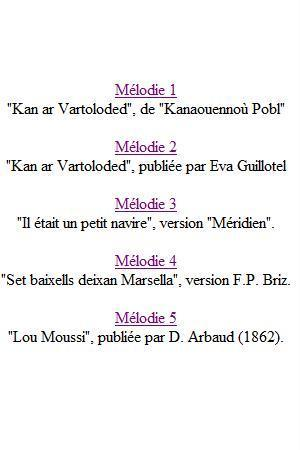
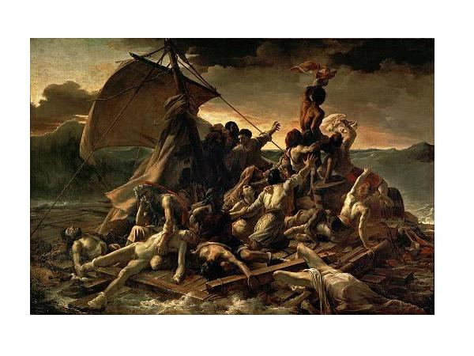
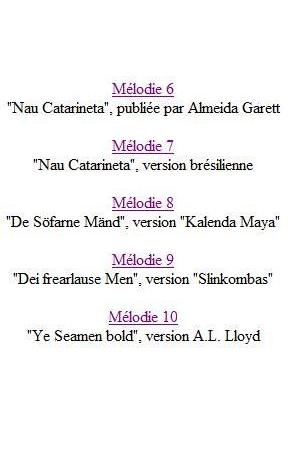
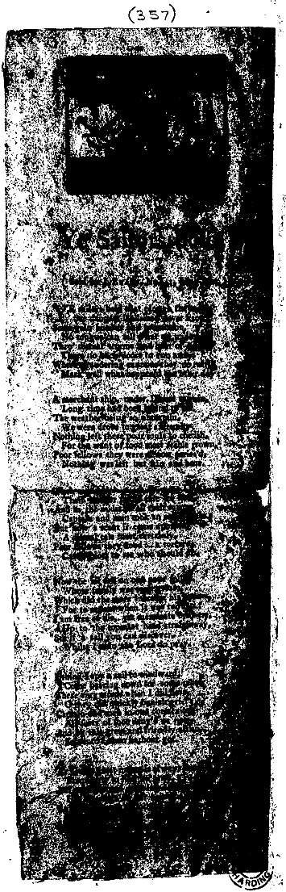

Des marins qui se font cannibales
Survival Cannibalism at Sea
Autour du "Petit Mousse" de Mme de La Villemarqué
Mme de La Villemarqué's "Cabin boy" and related songs|
 |
 Le "Radeau de la Méduse" peint en 1819 par Théodore Géricault (1791-1824) |
 |
Mélodies arrangées par Christian Souchon (c) 2014, sauf la mélodie 7
des chants sur le cannibalisme étudiés dans CANNIBALES, TOMBEAUX ET PENDUS un essai au format LIVRE DE POCHE 
de Christian Souchon |
"indecorous grave songs" presented, in French, in CANNIBALES, TOMBEAUX ET PENDUS (Cannibals, graves and gallows) as a PAPERBACK BOOK
by Christian Souchon |
Cliquer sur le lien ou l'image - Click link or picture for more info
1°Martoloded
Matelots
Sailors
Texte breton de Cornouaille recueilli par Théodore de La Villemarqué
Pages 9 et 10 du 1er carnet de Keransquer. Non publié
Mélodie 2
"Kan ar Vartoloded", tirée des archives sonores de l'association "Dastum
Citée par Mme Eva Guillorel dans sa thèse de Doctorat "La plainte et la complainte".
Le cannibalisme maritimeLe folkloriste George Doncieux (1856-1903) qui a étudié ce chant dans son "Romancero populaire de la France" (1903, pp.243-251) note qu'outre sa diffusion dans le domaine roman (oil, oc, catalan, portugais...), ce thème a également pénétré la tradition scandinave. Selon Patrice Coirault, cité par Eva Guillorel, on peut relever plus de 60 attestations européennes de ce chant et Conrad Laforte porte ce chiffre à plus de 70 en incluant des versions enregistrées dans les territoires francophones dAmérique). La "Courte-Paille", par l'intermédiaire de la Bretagne Française a en outre pénétré en Basse-Bretagne où elle a généré des gwerzioù telles que celle que La Villemarqué a notée: Dans sa thèse de doctorat "Plainte et complainte" consultable en ligne, Melle Eva Guillorel cite le chiffre de 19 versions en langue bretonne. Elle en propose une inédite, recueillie en 1956 par René Hénaff auprès de Mari an Drev, de Penmarch. Comme dans les versions françaises, la victime tout d'abord désignée est le mousse ("ar moustig"). Cette condamnation fait suite à un simulacre de jugement que la gwerz désigne par le terme de "komidi"! Le mousse monte deux fois au mât... Le chant se conclut par le conseil que donne le capitaine à ses surs d'épouser des agriculteurs plutôt que des marins! Avant de le laisser aborder au rivage, la gwerz basse-bretonne, y compris la variante lacunaire de La Villemarqué, impose à l'équipage affamé une épreuve dont les versions françaises ne parlent pas: sortir vainqueur d'un combat naval contre des forces bien supérieures en nombre. Il s'agit de navires espagnols dans les exemples cités ici; de navires turcs, dans une variante citée en note par Luzel. Dans ce dernier cas on peut penser à une interpolation issue d'un chant tel que la version manuscrite du "Mal du pays" notée p. 176 du 1er carnet de Keransquer, strophes (f) à (k). Si ce n'est que dans ce cas, les notations sont d'un réalisme tel qu'elles se rapportent sans doute à un événement historique précis et récent. L'épisode de la bataille navale ne fait guère avancer le récit, mais il contribue à en accentuer le caractère tragique, d'autant qu'il décrit souvent, en sus, l'agonie d'un des marins qui exprime ses dernières volontés. Melle Guillorel est d'avis qu'on ne peut tirer de la comparaison des versions françaises et bretonnes aucune conclusion quant à l'antériorité des unes par rapport aux autres. Mais la différence de ton, léger dans les premières, grave, voire tragique dans les secondes est une caractéristique que l'on retrouve de façon régulière. |
Survival cannibalism at seaThe French folklorist George Doncieux (1856-1903) who investigated this song in his "Romancero populaire de la France" (1903, pp.243-251) states that it not only spread all over the Romance linguistic area (Oil, Oc, Catalan, Portuguese...) but also pervaded Scandinavian tradition. According to Patrice Coirault, quoted by Eva Guillorel, there are over 60 European occurrences of this song, this figure being raised to 70 by Conrad Laforte who includes versions recorded in the French speaking parts of America. "La Courte Paille", via French-speaking Brittany, also entered Lower Brittany where it gave birth to gwerzioù similar to the fragment recorded by La Villemarqué: In her downloadable Ph.D. thesis titled "Plainte et complainte" (Complaint and Lament), Melle Eva Guillorel's estimate of extant Breton language versions amounts to 19. She presents a hitherto unpublished variant, gathered in 1956 by René Hénaff from the singing of Mari an Drev, from Penmarch. Like in the French language versions, the first victim agreed upon by the crew is the ship's boy ("ar moustig") as the result of parodical proceedings labelled "komidi" by the gwerz! The said ship's boy will have to ascend the mast twice... The lament ends up with the advice given by the ship's captain to his sisters to marry farmers rather than sailors! Before they are allowed to land, in all versions of the Low-Breton gwerz, La Villemarqué's fragment inclusively, the starving sailors are inflicted an additional trial the French language versions don't know of: winning a naval combat fought against far superior forces, as a rule Spanish ships, Turkish ships in a variant quoted by Luzel in a foot note. The latter instance may be interpolated from another song such as the handwritten version of "Homesickness" included on p. 176 of the first Keransquer copybook, stanzas (f) with (k). However the account of the battle is so minutely detailed that it must refer to precise historic events which occurred recently. The naval combat episode does not make the plot progress in any way, but it highlights its tragic character, all the more so, as it is often combined with the record of the agony of one of the sailors who expresses his last wishes. Melle Guillorel takes the view that comparing the French and Breton language versions may lead to no conclusion as to which category is anterior to the other. But the difference of tones, fickle here, grave, if not tragic, there, is a fact that will be constantly noticed. |
|
Bien que l'anthropologue américain William Arens, dans son "Man-Eating Myth" (Mythe de l'anthropophage, 1979), s'interroge sur le crédit à accorder aux histoire de cannibalisme, à partir de la découverte de l'Amérique en 1492, l'anthropophagie devint un sujet de préoccupation obsessionnelle: le mot espagnol "Cannibales" désigne à l'origine des tribus antillaises, les Caraïbes, qui habitaient les îles américaines des Petites Antilles où Christophe Colomb débarqua tout d'abord. Le cannibalisme est un des grands sujets traités dans les contes et légendes où il caractérise les méchants tels que la sorcière dans "Hänsel et Gretel". C'était déjà le cas dans le mythologie grecque (légendes de Térée, Chronos, Tantale...). Mais on apprit bientôt que le cannibalisme était pratiqué, comme ultime moyen de survivre, par les navigateurs torturés par la faim. Sur le plan juridique, les survivants anthropophages à ces naufrages -qui se produisaient régulièrement- étaient en général poursuivis en justice. Et cela, bien que le "cannibalisme de survie" fût considéré comme un dernier recours possible, assurant à ceux qui le pratiquaient un certain capital de sympathie dans la mesure où il était exempt de tricherie. Les usages maritimes n'étaient pas ce que l'on pourrait imaginer aujourd'hui: les bateaux étaient insuffisamment équipés en chaloupes et c'est les membres de l'équipage qui les utilisaient en priorité, comme étant les seuls aptes à maintenir à flot ces embarcations et à s'en servir pour chercher du secours. Généralement on n'avait pas le temps d'embarquer suffisamment de vivres et il n'existait aucune obligation pour un bâtiment croisant ces rescapés de les prendre à son bord où ils auraient entamé d'avantage ses propres réserves de nourriture. Ces incidents devinrent le sujet de feuilles de colportage qui insistaient sur les détails les plus atroces de ces histoires, où le tirage au sort figurait toujours en bonne place. Comme on le verra dans les ballades ci-après, les chanteurs ne pouvaient presque jamais s'abstenir d'introduire un épisode marqué par une intervention divine, le plus souvent l'arrivée, in extremis, d'un bâtiment qui empêchait que ne soit perpétré l'acte de cannibalisme. |
Though the American anthropologist William Arens, in his "Man-Eating Myth" (1979), questions the credibility of reports of cannibalism, cannibalism
became an obsessive topic with the discovery of America (1492): the Spanish word "Cannibales" refers to the West Indies tribe, the Caribs, who were the inhabitants of the American islands, the Lesser Antilles, were Christopher Colombus first landed. Cannibalism became a frequent feature in tales and legends and, as a rule, ascribed to evil characters as the witch in "Hänsel and Gretel". It already was in Greek mythology (stories of Thyestes, Tereus, Chronos, Tantalus...). But it soon was reported that cannibalism was also practiced, as a last resort, by seafarers suffering from hunger at sea. From a legal point of view, anthropophagous survivors of wrecks - which were regular occurrences - were as a rule prosecuted, though survival cannibalism was perceived as a last resort and there was sympathy for those who were reduced to it, provided that the drawing of lots was not rigged. The maritime practice was not what we could imagine nowadays: Since the ships sailed with insufficient lifeboats, the standard practice was to get the crew into them first who only were to stand any chance to keep the craft afloat and reach safety. As a rule they hardly had time to salvage enough food. And there was no legal requirement for passing vessels to rescue survivors who would consume their own supplies. These incidents were the subject of broadsides emphasizing the most gruesome aspects of the stories and emphasizing the drawing of lots which became the dominant motif. As it appears in the following songs, singers were tempted to introduce an episode of divine intervention, most frequently the arrival of a rescuing ship to prevent the cannibalistic act. |
| Brezhoneg | Français | English |
|---|---|---|
|
MARTOLODED P. 9 1. Selaouit holl, O selaouit! Ur zonig nevez zo savet, Savet d'an holl martoloded Zo war ar mor bras ambarket. 2. Tri bloaz zo tamm douar n'deus gwelet Hag o barfe a zo mañket. Red vezo tennañ ar bilhed Da gouzhout piv a vo debret. 3. Dre gras Doue hag an Dreinded Gant gabiten al lest ema degouet. - Posubl ve d'hirio an deiz Ha ma martoloded am debrfe? 4. Pajik, pajik, pajik bihan, Kerzh da beg ar wern ha kerzh buhan! Ha deus ar wern bihan d'ar wern braz, Goût ha mar te welo douar bras! 5. O voned d"al laez eñ a ouele O tonet d'an traon eñ a gane. - Pajik, pajik, lavar din-me, Petra az-peus gwelet du-se? P. 10 6. - M'am-eus gwel't o tont Spagnoled Hag ar c'hornik eus ur vered Hag ar c'hornik eus ar vered Me garfe bout enni interret. 7. Ha triwec'h lestr ar Spagnoled Me wel mont erru d'hor c'havout. Hag ema o gouelioù liv ar gwad Ne c'houlenn 'med brezel pe kombat. 8. - Pajik, pajik, pajik bihan: Red vo dimp difenn ez serten? - Evit e vint triwec'h lec'h unan Me gombato d'oute va-unan. 9. - O Itron Varia an Arvor, Diganeoc'h me c'houlenn sikour: Hol lestrik bihan deus-a Bennmarc'h Eñ roet d'ar Spagnol kombat awalc'h p. 11 10. Pa oant digouet ha n'hallint mui En-devoa laret vit serten: Kaier Keransker Nv 1 |
MATELOTS P. 9 1. Ecoutez tous, O écoutez Un chant récemment composé Il nous parle de matelots Embarqués sur l'onde et les flots. 2. Trois ans qu'ils n'ont plus vu la terre Leurs vivres viennent à manquer. Ils tirent à la coute paille Pour savoir qui sera mangé. 3. Dieu et la Trinité décident: Le capitaine est désigné - Se peut-il donc qu'aujourd'hui même Mes matelots m'aient dévoré? 4. Page, page, mon petit page Monte donc vite en haut du mat! Petit mat, grand mât: de la cime Voit-on une terre de là?.- 5. En montant il versait des larmes Il chantait en redescendant - Page, page, veux-tu me dire: Qu'as-tu vu de si réjouissant? P. 10 6. Une flotte espagnole approche, On voit un cimetière au loin C'est là que je veux qu'on m'enterre Dans ce cimetière marin. 7. Et ces dix-huit vaisseaux d'Espagne Je les vois qui viennent vers nous. Rouges comme sang sont leurs voiles Ils veulent combattre. C'est tout! 8. - Page, page, mon petit page: Il faut nous battre, c'est certain En dépit de leur avantage Battons-nous à dix-huit contre un. 9. - Patronne d'Armor, Notre Dame, De vous j'implore le secours. - De Penmarc'h le petit navire A tenu tête aux Espagnols. p. 11 10. C'est épuisés qu'ils accostèrent. Avec assurance, il a dit: Traduction Christian Souchon (c) 2014 |
SAILORS P. 9 1. Listen all, O listen To this newly made song, In honour of those sailors who embarked to go out on the ocean. 2. After three years with no landing, When their food supplies ran out, They had to draw lots To decide who would be eaten first. 3. It was the Holy Trinity's will That the short straw wisp fell to the captain. - Would it be possible that today My sailors would devour me? 4 - Ship's boy, ship's boy, listen Climb atop the mast, quickly! Atop the foremast, then the mainmast Look if you can see a shore! - 5. When he climbed up, he cried But when he climbed down the mast, he sang. - Ship's boy, ship's boy, tell me, Tell me: what did you see? - P. 10 6. - I saw Spaniards coming Could also catch a glimpse of a churchyard Catch a glimpse of a churchyard I wish, they would bury me there. 7. All the eighteen Spanish ships Were coming to engage us Their sails are blood red in colour They come to make war and to fight. 8. - Ship's boy, ship's boy, my boy We will have to fire back, no doubt! Even with one ship against eighteen We shall sell our lives dearly. 9. O Our Lady of Armor Hark we implore your succour! - And the small vessel from Penmarc'h Made life difficult for the Spaniards. p. 11 10. When they landed they were exhausted. Self-confident the captain said: Keransquer copybook N° 1 |
2° Kan ar Vartoloded
Chant des Matelots
Song of the Sailors
Texte breton complet recueilli par Alfred Bourgeois
(publié dans "Kanaouennoù Pobl" en 1893)
Mélodie 1
"Kan ar Vartoloded", publié dans "Kanaouennoù Pobl" d'Alfred Bourgeois en 1893
Fond sonore de la présente page
|
Comme on le verra, la "version critique" de la "Courte paille" proposée par Doncieux fait aborder le malheureux équipage à Babylone. Il en est de même dans la plupart des versions basses-bretonnes. Le mousse, envoyé à nouveau en haut du mât, fait de ce havre de salut la même description quasi-mystique que dans les versions françaises. Mais ici le dénouement de l'histoire fait intervenir un nouveau protagoniste, le recteur de la ville. A propos de la version Luzel, Doncieux note: "Le translateur breton, d'ailleurs assez fidèle, a donné à la fin de l'histoire un tour dévot et funèbre, qui n'est pas bizarre à demi : au pied de la tour de Babylone, il y a un cimetière où les indigènes font la procession; et le recteur de Babylone (!), qui est un homme excellent, témoigne sa charité aux matelots moribonds en leur administrant l'extrême-onction, tous à la file." Dans une variante indiquée en note par Luzel, on ajoute: « Êt int ho zregont n ur poullad Doue da roï dhô maro mad ! » ("On les mit dans un même trou/ Dieu donne bonne mort à tous!") Loin d'être une bizarrerie imputable au collecteur, ce trait caractérise de nombreuses versions, par exemple celle recueillie par Alfred Bourgeois que l'on trouvera ci-après (str. 18). Il apparaît même dans la traduction française de Penguern, signée "L.J.", avec un degré supplémentaire dans le mode tragique: le recteur lui-même succombe! « Il a donné lextrême-onction à dix-huit personnes, sans ôter létole de son cou et au dix-neuvième, son cur a failli, en voyant la détresse des mariniers ». D'autres détails navrants sont parfois donnés: la mère du mousse est enterrée dans le cimetière (cf. str. 10 de la version La Villemarqué); le capitaine demande que l'on rapporte à sa femme sa chemise tachée de sang... On est bien loin de l'optimiste épiloque de la version traditionnelle française: "T'a gagné la fille à ton maître et le navire qu'est sous tes pieds", des pittoresques bergères et de leurs moutons qui appartiennent à un autre registre et encore plus loin des ironiques spéculations culinaires de la version "Méridien", "l'un voulait qu'on le mit à frire, l'autre voulait le fricasser". Comme on le sait, la gwerz s'efforce le plus souvent d'enraciner sa narration dans le contexte géographique connu des auditeurs. Le "Martoloded" de La Villemarqué ne déroge pas à la règle: le bateau vient de Penmarc'h et le mousse invoque Notre Dame d'Armor. Dans une version de Penguern on parle concurremment du clocher de Babylone et de celui de Saint-Pol de Léon! Si, pour Doncieux l'emprunt par la gwerz à la chanson française du vocable exotique "Babylone" ne fait aucun doute, c'est peut-être qu'il ne sait pas à quel point cette évocation est fréquente dans la tradition orale bretonne: "Je vois le château de mon père, Les vingt fenêtres à regarder. Je vois le vivier de mon père, Les lavandières autour laver. Je vois les moutons de mon père Et les bergers à les garder. Je vois la tour de Babylone, Et les serpents autour voler» où la dernière strophe traduit une variante citée par Luzel (Gwerzioù II, p.184): "Me wel ac'han tour Babilon Ha tri sarpant war he fignon". "la terr de Barbarie Et Babylone à ses côtés ». Bien entendu, on ne peut exclure que ce thème soit emprunté à des thèmes favoris de la tradition orale ou de colportage en français, tels que l'histoire de Huon de Bordeaux. Mais il convient également d'insister sur le rôle qu'ont pu jouer dans la diffusion de ce thème les homélies en langue bretonne à compter du 18ème siècle, où Babylone fait parfois concurrence à Sodome en tant que ville pécheresse par excellence et où les Turcs font figure de pécheurs impénitents. Un cantique plus ancien, attribué par le Père Maunoir dans ses "Cantiques spirituels" au père Melrio, et publié par Lédan après 1850, situe l'histoire de Katell Gollet, par ailleurs classiquement occidentale et chrétienne, "er gêr a Itara en Indez Sav-Heol er bloaz 1560" (à Itara, aux Indes Orientales en 1560). Un autre manuscrit (VIII) de la collection Lédan contient une feuille volante intitulée "Exempl ha Punition Eruet en eur guêr en Indes, er bloavez 1743" (Exemple et punition [des méfaits d'une jeune fille] survenus dans une cité des Indes en 1743. A ces exemples, empruntés à la thèse de doctorat d'Eva Guillorel (pp. 540 et 541), on peut ajouter un conte du poète, romancier, essayiste, épistolier et peintre quimpérois, Max Jacob, publié en 1911, dans son premier recueil, "La Côte ". Même si l'on peut discuter de l'authenticité de ces "Chants Celtiques Anciens Inédits", il est certain qu'on y retrouve les thèmes traditionnels des chansons bretonnes dans des passages tels que: "La Babylone j'ai vu, Marie!" , ou bien encore: "Les fleurs des ronces lui dirent: " Attention! nous te parlons! il faut aller déclouer le Christ à Babylone. Le recteur de Babylone n'est pas un brave homme! C'est lui qui tient Notre-Seigneur cloué sur une croix dans son jardin." Cette dernière citation tirée du conte "Celui qui a décloué le Christ", fait évidemment référence à la version basse-bretonne de la "Courte-paille". Ce conte ce termine ainsi: "Quant au fils du comte de Kerivy, il apprit le métier de cordonnier à Babylone. Un jour, il y eut un concours pour savoir qui ferait la plus jolie chaussure à la fille du roi. II se trouva que ce fut lui qui fit la plus jolie chaussure: la main de la fille du roi était la prime donnée au concours. II devint roi. Alors il condamna le mauvais recteur." Il est intéressant de noter que deux ans avant la parution du recueil, le Juif de naissance qu'était Max Jacob avait eu la vision de l'image du Christ sur le mur de sa chambre, le 22 septembre 1909, et qu'il se fit baptiser le 18 février 1915. Picasso était son parrain. Comme on le voit, la tradition bretonne tendrait à voir dans Babylone le lieu de perdition dont parle l'Apocalypse, chapitres 17 et 18, où est annoncé le châtiment de la "grande Prostituée au bord des grandes eaux". Cette référence constante dans l'imaginaire traditionnel breton tendrait à invalider l'hypothèse de Doncieux d'un emprunt de ce thème par la gwerz à la complainte de langue française. C'est à une autre source, le Psaume 137 où Babylone est la terre d'exil des Hébreux, que puise l'abbé Noury, recteur de Bignan, dans un poème où ils déplore l'éloignement auquel la révolution de 1789 l'a contraint: Le prêtre exilé (strophe 4). Il suit en cela l'exemple donné par W. Hamilton de Bangour, à une époque où c'était la France qui était terre d'exil des Jacobites de Grande-Bretagne: On Gallia's shore. |
As stated hereafter, the "archetypal" version of "La courte paille" restored by Doncieux has it that the unfortunate crew landed on the shore of Babylon. So do they in most Celtic Breton versions. The ship's boy who was sent up the topmast makes of this harbour of salvation the same quasi-mystical description, as in the French language versions. But in the present instance, an important role is imparted, in the outcome of the story, to the parson of the town. Concerning Luzel's version, Doncieux writes: "The Breton translator, rather reliable for all that, puts the conclusion in a no little surprising pious and dismal light: at the foot of Babylon tower, there is a churchyard where the inhabitants go in procession. And the parson of Babylon (!) who is an excellent man, extends his benevolence to the starving sailors standing in a row by giving them the Extreme-Unction!" In a variant quoted in a foot note, Luzel adds: "« Êt int ho zregont n ur poullad Doue da roï dhô maro mad ! » ("They were buried in the same hole/ God grant them all a peaceful death!") Far from being an oddity created by the collector's whim, this peculiarity is found in many versions, for instance the song collected by Alfred Bourgeois mentioned below (st. 18). The situation takes a still more tragic turn in de Penguern's French translation signed "L.J.": the parson himself succumbs! "He gave the Extreme-Unction to eighteen people Without taking the stole off his neck But when it came to the nineteenth his heart failed him At the sight of the sailors' distress." The narrative is sometimes interspersed with other upsetting details: The ship's boy's mother is buried in the churchyard (see st. 10 in La Villemarqué's version); the captain requests that his blood stained shirt be returned to his wife... We are miles away from the optimistic conclusion of the French language version: "You are given your master's daughter for a wife, as well as the ship under your feet!"; from the picturesque shepherdesses and their sheep that belong in another category of ditties; still further away from the ironically culinary considerations in the "Méridien" version; "One wanted him fried, the other wanted him fricasseed." As we know a gwerz mostly wants to locate its plots in geographic surroundings well-known to the audience. La Villemarqué's "Martoloded" complies with this rule: the ship is sailing from Pennmarc'h and the ship's boy beseeches the help of Our Lady of Armor. In one of de Penguern's versions the exotic Babylon is mentioned concurrently with the Low-Breton Saint-Pol-de-Léon! If Doncieux does not doubt that it was the gwerz that borrowed the outlandish name "Babylon" from the French song, then perhaps so because he is not aware of the frequent references to this old city in Breton oral tradition. "I see my father's castle With its twenty windows to look through. I see my father's fish pond With washing women all around. I see my father's flock of sheep With shepherds looking after it. I see the Tower of Babylon With serpents flying all around." whereby, the last stanza translates a variant quoted by Luzel (in "Gwerzioù", 2nd book, p.184): "Me wel ac'han tour Babilon Ha tri sarpant war he fignon". "the land of Barbary And Babylon adjoining it" Of course, we cannot exclude that this theme was one of the many popular topics in the French language oral tradition and chapbooks literature: another instance for such borrowings is the story of Huon of Bordeaux. But it is important to highlight the role imparted to Breton language church homilies in making this theme popular, as from the 18th century. In these pieces of oratory, Babylon often vies with Sodom for the dubious honour of being the "sin city par excellence", where the Turks appear as impenitent sinners. An older hymn, ascribed by Father Maunoir in his "Cantiques spirituels" to Father Melrio, and published by Lédan after 1850, locates the story of Katell Gollet, in spite of its classical western and Christian contents, "er gêr a Itara en Indez Sav-Heol er bloaz 1560" (in Itara in the West Indies, in 1560). Another MS (VIII° in the Ledan MS Collection) includes a broadside titled "Exempl ha Punition Eruet en eur guêr en Indes, er bloavez 1743" (Example of a girl whose bad conduct was punished in 1743, in a West Indian city). To these instances quoted by Eva Guillorel in her doctoral thesis (pp.540 and 541), we may add a tale that the poet, novelist, essayist, letter writer and painter from Quimper, Max Jacob published in 1911, in his first book, "La Côte" (The shore). Even if the genuineness of these "hitherto unpublished Ancient Celtic Songs" is questionable, they harbour without doubt genuine traditional Breton song themes as some excerpts make evident: "Babylon I did see, Mary!" or: "The bramble blossoms said: "Take care! We are speaking to you! You have to go and remove from the cross the Christ in Babylon. The parson of Babylon is no good man. He is the one who keeps Christ nailed onto a cross in his garden." The latter sentence is an excerpt from the tale "The man who removed Christ from the cross", and evidently refers to the Lower-Brittany version of "The shorter Straw" which ends up as follows: "The Earl of Kerivy's son learnt the shoemaker's trade in Babylon. One day, there was a contest of skill: who would make the finest shoes for the king's daughter would be given her hand in marriage as a reward. So he became the king and he sentenced to death the bad parson." It is worthwhile mentioning that two years before the book came out, the Jewish-born Max Jacob had a vision of Christ appearing on the wall of his room, on 22nd September 1909. He was christened on 18th February 1915, Picasso being his godfather. As we see, Breton folklore tends to consider Babylon as the den of iniquity addressed in the Apocalypse, chapters 17 and 18, anouncing that judgment will be passed upon the "Great harlot by the riverside" . Since Breton tradition constantly refers to it, Doncieux is not justified in his assumption that this theme was borrowed by the gwerz from the French language lament. It is from another source, the 137th Psalm, presenting Babylon as the land to which the Jews were exiled, that the Rev. Noury, the Parson of Bignan, draws in a poem where he bemoans the estrangement to which the 1789 revolution has compelled him: The exiled priest (stanza 4). Herewith he follows the example given by W. Hamilton of Bangour, at a time when France was a refuge for the Jacobites of Great Britain: On Gallia's shore. |
| Brezhoneg | Français | English |
|---|---|---|
|
KAN AR VARTOLODED 1. Mar ho peus c'hoant gouzout ha klevet Da biv eo ar werz-mañ kompozet Zo graet d'ur vandenn vartoloded A zo war ar mor bras ambarket 2. A zo war ar mor bras ambarket Seiz vloaz zo tamm douar n'o deus gwelet Prestik eo da gregiñ an eizhvet O provizion ganto zo manket 3. Kabiten al lestr a lavare D'e vartoloded, un deiz a voe : - Hastit, paotred, hag hastit buan Fritañ ar pajig bihan da goan - 4. Ar pajig bihan vo ket fritet D'ar blouzenn verrañ e vo tennet D'ar blouzenn verrañ p'o deuz tennet Gant kabiten al lestr eo digouezhet 5. D'ar blouzenn verrañ p'o deus tennet Gant kabiten al lestr eo digouezhet Ha possubl e ve 'ta, va Doue, Ve va vartolodet em drepfe 6. Kabiten al lestr a lavare D'e bajig bihan hag a neuze - A, pajig bihan, pajig bihan Te a zo dilijant ha buan 7. Sav ta da veg ar vern uhellañ Da welet peseurt bro 'm omp amañ - Mont a ra d'an nec'h en ur ganañ Dont a ra d'an traoñ en ur ouelañ 8. - Netra, va mestr, me n' am eus gwelet Met seizh lestr ha kant a Spagnoled Met seizh lestr ha kant a Spagnoled O tonet evit hor c'hemeret 9. Ur pavilhon ruz o deuz lakaet Ur pavilhon eus a liv gwad Hag a c'houlenn brezel pe gombad Hag hor bezo sur ur gwall grogad ! - 10. Kabiten al lestr a lavare D'e vartoloded en devezh-se : - En em sikouromp korf ha kalon Keit ha pado hor munision - 11. Kriz vije ar galon na ouelje War aod ar mor don neb a vije En ur welet al lestrig bihan O stourm ouzh seizh lestr ha kant, e-unan 12. En ur welet al lestrig bihan O stourm ouzh seizh lestr ha kant, e-unan Met dre c'hras ar Werc'hez benniget Al lestrig bihan 'n eus gounezet 13. Kabiten al lestr a lavare D'e bajig bihan hag a neuze : - O pajig bihan, pajig bihan Te a zo dilijant ha buan 14. Sav ta da veg ar wern uhellañ Da c'houzout pe vro en omp amañ - Mont a ra d'an nec'h en ur ouelañ Dont a ta d'an traoñ en ur ganañ 15. Dont a ra d'an traoñ en ur ganañ - Va mestr n'em eus gwelet netra Nemet toud Babilon benniget Ar brocesion ober tro ar vered - 16. Kriz vije ar galon na ouelje E Babylon 'n hini a vije Gant ar vartoloded o tonet O toned hag o c'houlenn o boued 17. Lod anezho a c'houlenn o boued Ul lod all o c'houlenn ur beleg Ul lod all o c'houlenn bara Ul lod all ne lavarent netra 18. Person Babilon trugarezuz 'N andred ar barien karantezuz Voe o reiñ ouzhpenn triwec'h nouenn Hep lemel e stol eus e gerc'henn Kanet e Rosko e miz Eost 1893, gant ur vatez goz Soaz Helou he anv, Intañvez Grall, eus Plouenan (Penn-ar-Bed), e ti Ao Salaün, noter. |
LE CHANT DES MATELOTS 1. Vous brûlez sans doute d'apprendre Pour qui ce chant fut composé. Pour des marins, un équipage Qui sur l'océan navigait. 2. Donc, sur l'océan, ils naviguent Depuis sept ans, sans débarquer! Et la huitième année s'achève: Les vivres viennent à manquer 3. Et le capitaine déclare A ses matelots ce jour-là: - Hâtez-vous donc, marins, de cuire Le mousse en guise de repas. - 4. Vous n'allez pas cuire le mousse! A la courte paille tirez! Et voilà qu'à la courte paille Le capitaine est désigné 5. Donc la courte paille désigne Le capitaine du bateau - Ah, mon Dieu, quelle mort horrible: Dévoré par mes matelots! - 6. Le capitaine du navire Demande à son mousse à présent: - Viens là, mon petit mousse agile! Il me faut tes soins diligents. 7. Il faut qu'en haut du mât tu grimpes Voir quelle terre est-ce là-bas - Il monte une chanson aux lèvres Quand il redescend, il larmoie. 8. - Point de terre en vue, capitaine, Mais cent sept vaisseaux castillans Cent sept vaisseaux venus d'Espagne Nous accueillir: c'est terrifiant! 9. Ils ont hissé pavillon rouge, Un pavillon couleur de sang Ils veulent nous livrer bataille Affaire chaude, assurément! - 10. Le capitaine du navire Dit à ses marins ce jour-là: - Nous nous défendrons, bec et ongle, Tant que la poudre suffira. - 11. Il eût eu l'âme bien cruelle Celui qui, de la côte aurait Vu sans frémir ce seul navire Aux cent sept géants confronté. 12. Ce n'est qu'un tout petit navire Qui tient tête aux cent sept géants Mais grâce à la Vierge Marie Il s'en sort victorieux pourtant! 13. Et le capitaine s'adresse A son petit mousse à nouveau: - Approche encore ici, le mousse, Le plus agile des marmots! 14. Au grand mât je veux que tu grimpes vois où l'on aborde à présent. - Il a grimpé les yeux en larmes Mais chantait en redescendant. 15. Il descend la chanson aux lèvres - Capitaine, devinez donc, J'ai vu le long du cimetière De Babel une procession. - 16. A Babylone un cur de pierre A cette vue, même, eût pleuré: Tous ces matelots qui débarquent Quêtant quelque chose à manger. 17. Les uns quêtent la nourriture, D'autres veulent un confesseur. Et tandis que la plupart mangent D'autres restent muets de stupeur 18. Le bon recteur de Babylone A ces convalescents, en tout, Donna plus de dix-huit extrêmes Onctions, l'étole autour du cou. "Kanaouennoù Pobl", chansons recueillies par Alfred Bourgeois dans la deuxième moitié du XIXème siècle ; le recueil a été publié en 1959 à Paris. Traduction Christian Souchon (c) 2014 |
SONG OF THE SAILORS 1. O folks, come near and you shall know Whom for was composed this song of woe! For a crew of sailors it was made Whose return was endless long delayed. 2. They had put out to sea once more, Could for seven years not spy a shore. Soon was to begin the eighth year Their supplies of food had run out sheer. 3. The captain of the ship did say Speaking to the gathered crew that day: - Do you want a meal to enjoy? Quickly fry for dinner the ship's boy! - 4. - No sir, the ship's boy, won't be fried: That's a thing drawing lots must decide, Who would be fried? They have drawn lots T'was the captain against all the odds 5. The captain was chosen by fate Cruel man, his embarrassment was great! - O God, is this truly Your will That I should end my life on a grill? - 6. The captain of the ship has said To the ship's boy who stood still in dread: Come here, my boy, who are so quick You shall make good for this nasty trick! 7. Climb up atop the highest mast, To see if some shore now we go past! - When he climbed up he sang a song, But down he went crying all along! 8. - No land, sir, whatever, in sight, But a hundred seven ships to fight Us under the colours of Spain! They come to engage us: it's in train. 9. I wonder what flag now they raise Blood red, dazzling in spite of the haze! They come to fight, to shoot, to hit. I fear we'll have a hard time of it. - 10. The captain has said to the crew Anxious to know what now he would do: - Sell your lives dearly, boys, hold fast As long as ammunition will last! - 11. Cruel-hearted were whoever had Been on the sea shore and had not cried, On seeing this tiny craft before All these hundred seven men-o'-war 12. Yet this only ship did withstand A hundred seven ships flocked to a band, To the blessed Virgin they did pray: She favoured them and they won the day! 13. The captain hailed the boy again, Wanted him to climb and search the main. - Come here, the nimblest of us all, Climb up! Look what may on us befall! 14. Climb up the highest mast and see If there's some mainland beyond the sea- When he was climbing up he cried When he went down he looked satisfied. 15. He sang a song when he came near - Sir, only one thing to be seen here, The blessed Babylon tower, earthward. A procession around the churchyard. - 16. Cruel hearts who were not moved to tears In Babylon, hearing all these cheers, For the sailors leaving the craft Who had starved for so long on their raft. 17. Part of them were asking for food Others were in a confessing mood Others to the baker's did walk And others did not so much as talk 18. A good man's Babylon's parson Gave eighteen times the Extreme Unction To save these exhausted men's souls He did not take off his neck his stole! Translation Christian Souchon (c) 2014 |
3° "La courte paille" et "Il était un petit navire"
Ancien chant populaire français reconstitué par George Doncieux ("version critique")
Version moderne courante et traduction allemande
Mélodie 3
"Il était un petit navire", mélodie connue
|
Le chant que George Doncieux intitule "La Courte-Paille" est maintenant connu en France, presque exclusivement par une variante parodique que le répertoire des chansons enfantines s'est approprié sous le titre d'"Il était un petit navire". Cette variante a été rendue célèbre, le 17 août 1852 par "Le Méridien", un "vaudeville" en un acte de L-F. Nicolaïe dit "Clairville", R. Deslandes et Pol Mercier, donné au Théâtre du Vaudeville à Paris. La musique était arrangée par Edouard Montaubry. C'est de là que proviennent les modifications qu'on y constate par rapport aux versions anciennes: En dépit de ces badineries récentes, le chant est ancien. Il remonterait au XVIème siècle, comme l'atteste la langue. Du fait de son ancienneté, il est aussi très répandu: George Doncieux, dans son "Romancéro populaire de la France" (1904, pp.243-251) énumère pour le seul domaine francophone 28 versions imprimées de ce chant depuis 1839, auxquelles s'ajoutent 11 versions catalanes. C'est sur cette base que fidèle à l'enseignement du philologue, membre de l'Institut, Gaston Paris (1839-1903) il établit la "version critique" que l'on trouvera ci-après: L'auteur de l'article Wikipédia consacré au chant en français, veut y voir un chant de marins (chant de gaillard d'avant). C'est bien l'avis de Doncieux qui écrit: "Cette célèbre chanson de matelots est évidemment originaire du littoral de la France d'oïl, et plutôt, à tenir compte de son principal foyer, du littoral breton ou poitevin." Comme l'indique Melle Guillorel, il semble que le choix de Luzel soit plus judicieux: il ne classe pas ce chant parmi les chansons de bord auxquels il consacre toute une partie du second volume de ses "Sonioù", mais parmi les Gwerzioù" édifiantes, compte tenu des thèmes qu'il emprunte à la morale religieuse et en particulier celui de la mort chrétienne heureuse. Faut-il pour autant voir dans ces considérations, la preuve d'une antériorité bretonne? On serait tenter de le faire, si l'on suit Henri-Irénée Marrou dit Davenson, ("Le livre des chansons", 1944, p.98), qui évoque à propos des versions de langue française de la "Courte paille", une "usure des thèmes": avec le temps, des chants tragiques passent dans le registre de la parodie et de l'ironie et terminent leur carrière dans le répertoire des simples chants enfantins. |
The song which George Doncieux titles "La courte Paille" (Drawing lots) is nowadays well-known in France nearly exclusively as a parodical variant of it that children have appropriated as "Il était un petit navire" (There was a little ship). This variant became famous on 17th August 1852 when was premiered a "vaudeville" in one act, "Le Méridien", by L-F. Nicolaïe, alias "Clairville", R. Deslandes and Pol Mercier. The music was arranged by Edouard Montaubry. Hence come the changes we can see when comparing the old song with the modern ditty which states: In spite of these modern jests, the song is old and, judging by the ancientness of the language used, it may be traced back to the 16th century. Being so old, it is also widely spread: George Doncieux in his "Romancero populaire de la France" (1904, pp.243-251) lists 28 versions of this song, printed in the French-speaking area since 1839 and 11 Catalan versions. On this basis Doncieux established, in accordance with the views of Gaston Paris, the "critical version" (i.e. archetypal) hereafter, with following typical features: The author of the Wikipedia article dedicated to the French language song "Petit navire", considers it a true shantee (more precisely, a forecastle song). So does Doncieux who writes: "This celebrated sailor song is evidently a shanty, native to the northern French littoral, and, judging by its centres of occurrence, to the littoral of Brittany and Poitou, in all likelihood." According to Melle Guillorel, the view taken by F-M. Luzel seems to be more judicious: he does not classify this song among the shanties, to which a whole section of his second collection of (joyful)"Sonioù" is consecrated, but among the edifying (stern) "Gwerzioù", in consideration of the topics it borrows from religious morals and ethics, in particular the theme of people dying a blessed, Christian death. Do these considerations make, for all that, a proof of anteriority for the Breton variant of the song? That is what Henri-Irénée Marrou, alias "Davenson" tends to admit (in his "Livre des chansons", 1944, p.98), when he states, in connection with the French language versions of "Courte paille", that essential themes become worn away by time, causing tragic songs to enter the repertoire of parodical and ironical songs, until they end their careers as mere nursery rhymes. |
La courte Paille
| Version "critique" | English |
|---|---|
|
1.Il étoit un petit navire, II étoit un petit navire, dessus la mer ma lon lon la! dessus la mer ma lon lon la! s'en est allé. 2 A bien été sept ans sur mèr(e) sans jamais la terre aborder. 3 Au bout de la septième année, les vivres vinrent à manquer. 4 Faut tirer à la courte paille, savoir lequel sera mangé. 5 Le maître qu'a parti les pailles, la plus courte lui a resté. 6 S'est écrié : « O Vierge Mère ! sera donc moi sera mangé ! » 7 Le mousse lui a dit : « Mon maître, pour vous je me lairrai manger. 8 Mais auparavant que je meure, au haut du mât je veus monter. » 9 Quand il fut dedans la grand hune, a regardé de tous côtés. 10 Quand il fut monté sur la pomme, le mousse s'est mis à chanter : 11 « Je voi la tour de Babylone, Barbari' de l'autre côté. 12 Je voi les moutons dans la plaine o la bergère à les garder. 13 Je voi la fille ci notre maître, à trois pigeons donne à manger. » 14 « Ah! chante, chante, vaillant mousse, chante, t'as bien de quoi chanter : 15 T'as gagné la fille à ton maître, le navire qu'est sous tes pies! » Chanson à danser. Vers de 16 syl. = 8 -|- 8, masculins, uniformément assonances en é; chaque vers, pourvu d'un refrain intérieur, forme couplet. |
1. There was a little ship, There was a little ship, upon the sea ma lon lon la! upon the sea ma lon lon la! she sailed away. 2. She was seven years on the sea Without ever coming ashore. 3. At the end of the seventh year, The food ran out. 4. They had to draw straws To find out who would be eaten. 5. The ship's master who gave out the straws, To him went the shortest straw. 6. He cried: « O Holy Virgin, my Mother! It is me who will be eaten! » 7. The ship's boy told him: « My Master, In your stead I'll let myself be eaten. 8. But before I die, To the top of the mast I will climb. » 9. When he was on the maintop, He searched the sea to every side. 10. When he reached the tip of the mast, The ship's boy started singing: 11. «I see the tower of Babylon, Barbary, on the other side. 12. I see a flock of sheep on the plains And the shepherdess guarding them. 13. I see our Master's daughter, Feeding grains to three pigeons. » 14. O, sing, sing, gallant ship's boy! Sing, you have good reasons to sing: 15. You wan your Master's daughter for your wife, And I give you the ship under your feet! - |
Il était un petit navire
| Version courante | English | Deutsch |
|---|---|---|
|
1. Il était un petit navire Il était un petit navire Qui n'avait ja-ja-jamais navigué Qui n'avait ja-ja-jamais navigué Ohé! Ohé! REFRAIN Ohé ! Ohé ! Matelot, Matelot navigue sur les flots. Ohé ! Ohé ! Matelot, Matelot navigue sur les flots. 2. Il partit pour un long voyage Sur la mer Mé-Mé-Méditerranée Ohé ! Ohé ! 3. Au bout de cinq à six semaines, Les vivres vin-vin-vinrent à manquer / Ohé ! Ohé ! 4. On tira à la courte paille, Pour savoir qui-qui-qui serait mangé, / Ohé ! Ohé ! 5. Le sort tomba sur le plus jeune, Qui n'avait ja-ja-jamais navigué / Ohé ! Ohé ! 6. On cherche alors à quelle sauce, Le pauvre enfant-fant sera mangé, / Ohé ! Ohé ! 7. L'un voulait qu'on le mit à frire, L'autre voulait-lait-lait le fricasser, / Ohé ! Ohé ! 8. Pendant qu'ainsi l'on délibère, Il monte en haut du grand hunier, / Ohé ! Ohé ! 9. Il fait au ciel une prière Interrogeant-geant-geant l'immensité, / Ohé ! Ohé ! 10. Mais regardant la mer entière, Il vit des flots-flots-flots de tous côtés, /Ohé ! Ohé ! 11. Oh ! Sainte Vierge ma patronne, Cria le pau-pau-pauvre infortuné, / Ohé ! Ohé ! 12. Si j'ai péché, vite pardonne, Empêche-les-les de-de me manger, / Ohé ! Ohé ! 13. Au même instant un grand miracle, Pour l'enfant fut-fut-fut réalisé, / Ohé ! Ohé ! 14. Des p'tits poissons dans le navire, Sautèrent par-par-par et par milliers, / Ohé ! Ohé ! 15. On les prit, on les mit à frire, Le jeune mou-mou-mousse fut sauvé, / Ohé ! Ohé ! 16. Si cette histoire vous amuse, Nous allons la-la-la recommencer, / Ohé ! Ohé ! |
1. There was a little ship, There was a little ship That had never sailed That had never sailed. Ahoy! Ahoy! CHORUS Ahoy, ahoy, ahoy matey, Matey sails the sea. Ahoy, ahoy, ahoy matey, Matey sails the sea. 2. It undertook a long voyage, On the Mediterranean Sea, Ahoy! Ahoy! 3. After five or six weeks, The food ran out, Ahoy! Ahoy! 4. They drew straws, To find out who would be eaten, Ahoy! Ahoy! 5. The short straw went to the youngest one, Although he wasn't very fat, Ahoy! Ahoy! 6. They tried to figure out with which sauce, The poor child should be cooked, Ahoy! Ahoy! 7. One wanted him fried, The other wanted him fricasseed, Ahoy! Ahoy! 8. While they were deliberating, He climbed to the topsail, Ahoy! Ahoy! 9. He prayed to the heavens, Pleading(?) with the vastness, Ahoy! Ahoy! 10. He searched and searched and sea, Saw nothing but water, everywhere. 11. O Holy Virgin, O, My Lady, Keep them from eating me, Ahoy! Ahoy! 12. If I have sinned, please, forgive, Prevent them from eating me! 13. At that moment, a great miracle, Was performed for the child, Ahoy! Ahoy! 14. Soon, little fish jumped, Into the ship by the thousands, Ahoy! Ahoy! 15. They were gathered, they were fried, And the ship's young boy was saved, Ahoy! Ahoy! 16. If you enjoy this song, We shall sing it all over again! (transl. http://www.mamalisa.com/ ?p=139&t=es&c=22) |
1. War einst ein kleines Segelschiffchen war einst ein kleines Segelschiffchen, das war noch nie, nie, nie, noch nie zur See, das war noch nie, nie, nie, noch nie zur See. Ohe, ohe KEHRREIM Hissen müssen die Matrosen Segel in die Höh. Die Fregatte gleitet über See. 2. Es unternahm, 'ne lange Reise, fuhr auf dem Mit- Mit- Mittelmeer zur See. 3. Der Proviant nach fünf, sechs Wochen ging aus, so daß, daß, daß man hungerte. 4. Man warf das Los, um festzustellen, wen man am be- be- besten schlachtete. 5. Das Los fiel auf den kleinen Moses. Der hob gleich an, an, an mit Ach und Weh. 7. Die einen wünschten ihn zu braten, die andern ihn, ihn, ihn als Frikassee. 8. Und wie sie noch darum berieten, stieg er am Groß- Groß- Großmast in die Höh. 9. Zum Himmel seufzt er, ihn zu retten vom sichern To- To- Todesschicksale. 10. Von oben sah er auf die weite, die dort so un- un- unbegrenzte See. 13. Begab sich da ein groß Mirakel wohl auf dem Mit- Mit- Mittelmeer zur See. 14. Es sprangen Fischlein in das Schiffchen, tausend und a- a- abertausende. 15. Man fing sie, und man tat sie braten, was unsern Mo- Mo- Moses rettete. Laut Wikipedia ist das Lied in dieser Übersetzung in Deutschland allgemein bekannt. |
4° Lou Moussi
Le mousse (provençal)
The ship's boy (Provençal)
Tiré des "Chants populaires de la Provence"
Tome 1, p. 127, (1862) recueillis et annotés par Damase Arbaud
en application du décret Hippolyte Fortoul du 8.11.1852
Mélodie 5
"Lou Moussi", publiée par Damase Arbaud
|
Outre les versions françaises et bretonnes, Doncieux cite des versions méridionales où "le dévouement du mousse perd étrangement de sa valeur : ce garçon n'offre plus de se laisser manger à la place du capitaine, il se borne, sur les instances et les promesses de celui-ci, à grimper au mât pour observer l'horizon ...Il découvre la terre, et ainsi le capitaine a la vie sauve." Le médecin et homme politique (maire de Manosque) Damase Arbaud (1814-1876), auteur d'un recueil de "Chants populaires de la Provence" (1862), cite une autre version publiée par M. Rathery dans le "Moniteur" du 15 juin 1853 et qu'il croit originaire de la région de Bordeaux. "Dans celle-ci, le capitaine se résigne au sort qui l'a désigné, quand un mousse généreux offre de se sacrifier à sa place. Le même auteur donne un autre chant recueilli dans la vallée d'Ossau et qui présente avec le nôtre de remarquables analogies: "Armées sont les galères, armées sont sur la mer; noble roi de Séville est celui qui les fait marcher. Sept ans elles ont vogué sur l'onde, sans jamais prendre terre; Mais quand est venue la 8ème année, les vivres leur ont manqué. Alors ils mangent les perroquets qui savent si bien jaser. Ils mangent les coqs qui, le matin, savent si bien chanter. - Armagnac, ça, dit le pilote, c'est maintenant que nous allons te manger. - Tu ne feras pas cela, sire mon maître, car de moi tu auras pitié. J'ai monté sur les haubans pour voir si la terre se montrait J'ai aperçu le rivage de Séville qui paraissait." |
Beside the Breton and French language versions, Doncieux lists variants sung in Southern France where "the ship's boy's sacrifice becomes astonishingly blurred: the boy does not offer to be eaten in his master's stead. Following the latter's promises and entreaties, he only climbs up the topsail mast to search the horizon...he sees a shore in the distance, so that the captain's life is spared." The physician and politician (mayor of Manosque) Damase Arbaud (1814-1876) who composed a "Collection of folk songs of Provence" (1862) quotes another version of "Courte paille", first published by M. Rathery in the 15th June 1853 copy of the journal "Le Moniteur", which he presumes originates from the Bordeaux area. "In this version, the captain resigns himself to the decrees of destiny that made him out as the victim, but a big-hearted ship's boy offers to be sacrificed in his stead. "Full-dressed are the galleys that lay out to sail. The noble king of Spain sent them out on the main. Seven years they have sailed the waves, never landing. But the eighth year, food had run out, everything! Now they ate the parrots that can chatter so wise. Now they ate the roosters that cause the sun to rise. - Armagnac, the helmsman proclaimed, we'll eat you now! - My Master, you will pity me, don't do that, no! I have climbed up the shrouds, a land to see I tried. The shore of Sevilla in the distance I spied. -" |
| Provençal | Français | English |
|---|---|---|
|
1. Sount tres veisseous dedins Marselho que van partir per Pourtugal (Malaga); Liroun fa la lireto que van partir per Pourtugal Liroun fa la lira. 2. N'ant ben restat sept ans sur l'aiguo Senso terro pousqu'abourdar. 3. Quand l'y a sept ans que sount sur l'aiguo Lou pan, lou vin, tout a manquat. 4. N'ant tirat à la courto palho Quau sera lou premier mangeat. 5. Au patroun de la gabinoyo (Au mestre qu'a partit les pailhos) Se la plus courto li a restat. (La courto palho n'a toumbat) 6. - Quan n'en es aqueou vaillant moussi Que la vido me voou sauvar? 7. Li doun' uno de mes tres filhos Em'un vaisseou subredaurat. 8. - N'en sera iou, moun capitani, Que la vido vous va sauvar. 9. - Ah! mounto, mounto, vaillant moussi, Mount à la poumo doou grand mat. - 10. Quand lou moussi's sur les crousetos Lou moussi s'es mes à plourar: 11. - Ah de que ploures, vaillant moussi, Veses pas quauque port de mar? (que toun plourar me fai pietat) 12. - Iou vese que lou ciel et l'aiguo Eme les oundos de la mar. 13. - Ah mounto, mounto, vaillant moussi, un pau plus haut le faut mountar. 14. Quand lou moussi n'es sur la poumo, Lou moussi s'es mes à cantar. 15. - Ah! de que cantes, vaillant moussi, Veses tu quauque port de mar? (Vese terro de tout coustat) 16. - Vese Touloun, vese Marselho, Nouestro-Damo de la Cioutat. (vese la Seyno, la Cioutat.) 17. Vese tres jouinos dameiselos que proumenoun long de la mar. 18. -Ah! canto, canto, vaillant moussi, Aro n'as ben de que cantar: 19. As gagna 'no poulido filho Em' un vaisseou subredaurat. 20. - Ai gagna 'no polido filho, Mai ai risquat d'estre mangeat. VARIANTE 1 due à M. Martini Ainsi que la musique. 17. Vese uno de vouestres filhos Que se proumeno long la mar. 21. - En l'hounour de la Viergi belo que graci à Diou nous a sauvats 22. farem bastir uno capelo, uno messo farem cantar. 23. Puis la filho que se proumeno au moussi la farem dounar. - VARIANTE 2 due à M. Pelabon qui l'a recueillie à Toulon. 21. De la Viergi nous fai la graci dins un des ports pousqu'arbordar 22. farem batir uno capelo long de la ribo de la mar. - |
1. Il y a trois vaisseaux dans Marseille qui partent pour le Portugal; Le refrain fait lirette qui partent pour le Portugal La chanson fait lira. 2. Sont bien restés sept ans sur l'onde Sans terre où puissent aborder. 3. Quand il y a sept ans qu'ils naviguent, Le pain, le vin, tout a manqué. 4. Ils tirent à la courte paille Le premier qui sera mangé. 5. Au patron de la caravelle (Au maître qu'a parti les pailles) la plus courte paille lui est restée. (A lui la plus courte est tombée.) 6. - Qui donc sera le vaillant mousse Qui me voudra la vie sauver? 7. Lui donne une de mes trois filles; D'un vaisseau présent lui ferai. 8. - Ce sera moi, mon capitaine, Moi qui la vie vous sauverai. 9. - Ah! monte, monte, vaillant mousse, Monte à la pomme du grand mat. - 10. Quand le mousse est sur les croisettes (vergues de perroquet) Le mousse s'est mis à pleurer: 11. - Pourquoi pleures-tu, vaillant mousse, Ne vois-tu quelque port de mer? (te voir pleurer me fait pitié) 12. - Je ne vois que le ciel et l'onde Avec les vagues de la mer. 13. - Ah monte, monte, vaillant mousse, un peu plus haut te faut monter. 14. Quand le mousse arrive à la pomme, Le mousse s'est mis à chanter. 15. - Ah! mais tu chantes, vaillant mousse! Verrais-tu quelque port de mer? (Vois-tu la mer de tous côtés?) 16. - Je vois Toulon, je vois Marseille, Notre Dame de la Ciotat (= de la Garde). (Je vois La Seyne et La Ciotat.) 17. Je vois trois jeunes demoiselles Sur la rive se promener. 18. - Ah! chante, chante, vaillant mousse, Car tu as bien de quoi chanter: 19. Il t'échoit une jolie fille En plus un vaisseau t'est donné. 20. - J'ai gagné une jolie fille, Mais j'ai risqué d'être mangé. VARIANTE 1 due à M. Martini ainsi que la musique. 17. J'aperçois l'une de vos fille Sur la berge à se promener. 21. - En l'honneur de la Vierge belle Qui, grâce à Dieu, nous a sauvés 22. Ferons bâtir une chapelle, Une messe ferons chanter. 23. Puis la fille qui se promène Au mousse la ferons donner. - VARIANTE 2 due à M. Pelabon qui l'a recueillie à Toulon. 21. A Marie qui nous fait la grâce Dans l'un de ces ports d'aborder 22. Ferons bâtir une chapelle Au bord de la mer au plus près. - |
1. There are three ships in Marseille Setting off for Portugal; The burden is "lirette" setting off for Portugal It is also "lira". 2. After seven years spent at sea Without a coast where to go ashore. 3. After seven years spent at sea, Bred, wine and everything ran out. 4. Now they drew the short straw To see who would be first eaten. 5. The captain of the ship (The captain who had distributed the wisps) Had got the shortest straw. (To draw the shortest straw fell to his lot.) 6. - Who will be the gallant lad Who will care to save my life? 7. I give him one of my three daughters; And he will get a ship to boot. 8. - It will be me, I shall save your life. 9. - O, climb, climb up, gallant ship's boy, Up to the tip of the main mast. - 10. When the boy has reached the cross yard (the topsail yard) He set crying: 11. - Why do you cry, gallant ship's boy, Don't you see any sea harbour? (I feel great pity to see you cry) 12. - I see nothing by sky and water And the waves of the sea. 13. - Higher up, higher up, gallant boy, Higher up you must climb. 14. When the boy reached the tip, He set singing. 15. - Now, you are singing, gallant boy! Did you see any sea harbour? (Do you still see the sea everywhere?) 16. - I see Toulon, I see Marseilles, And Notre Dame de la Garde. (I see La Seyne and La Ciotat.) 17. I see three young ladies Going for a stroll along the shore. 18. - O, sing on, sing on, gallant boy, For you have good reasons to do so: 19. A pretty girl falls to your share And a proud sea vessel to boot. 20. - A pretty girl fell to my share, But narrowly missed being devoured. VARIANT 1 due to M. Martini who contributed the tune. 17. I spy one of your daughters On the shore going for a stroll. 21. - To honour the Holy Virgin Who prayed to God we might be saved 22. We will have a chapel erected, Where mass shall be sung. 23. As for the strolling young lady She shall marry the ship's boy. - VARIANT 2 due to M. Pelabon who collected it in Toulon. 21. To the Virgin Mary whose mercy Allowed us to enter one of these ports, 22. We shall erect a sanctuary Right on the shore of the sea. - |
5° Set vaixells deixan Marsella (Lo Nostramo)
Sept vaisseaux quittent Marseille (Nostramont)
Seven ships leave from Marseilles (Nostramo)
Textes recueillis par Francesc Pelai-Briz (1839-1889)
(Versions catalanes tirées des "Chansons de la Terre" IV, 1874, p.28)
Mélodie 4
"Set vaixells deixan Marsella", mélodie publiée par F. Pelai-Briz en 1874
|
La version catalane qu'on va lire est dérivée sans aucun doute de la version occitane qui précède. Le vaisseau en perdition a Marseille pour port d'attache. Cependant un autre thème a contaminé certaines versions de Catalogne (Briz, Cans. de la Terra, IV, version majorquine) et, comme on le verra au chapitre suivant, de Portugal (Garrett, version principale): le sauveur du capitaine apparaît tout à coup comme le Diable en personne et veut avoir son âme pour loyer, ce que refuse le capitaine. L'origine de cette bizarre variante est une cantilène espagnole, "El Marinero", connue par une version asturienne (Braga, "Romanceiro gérai", en note) et plusieurs rédactions catalanes (Milà, Romancerillo, n° 34 : A, B, C, A'). "Un matin de la Saint-Jean, un marinier tomba dans l'eau. « Que me donneras-tu, marinier, pour que je te retire de l'eau ?» « Je te donne tous mes vaisseaux chargés d'or et d'argent. » « Point ne veux de tes vaisseaux, de ton or ni de ton argent; je veux avoir, quand tu mourras, ton âme.» « Mon âme, je la livre à Dieu, et mon corps à la mer salée !» Doncieux ajoute: "Dans la version majorquine de Briz on observe une simple juxtaposition des deux thèmes, dont la soudure accidentelle est fort apparente. |
The present Catalonian version is very likely derived from the Occitan version above. Marseilles is the distressed ship's home port. However another theme has contaminated some versions of Catalonia (Briz, "Cans. de la Terra", IV, Majorcan version) and, as we shall see in the next chapter, of Portugal (Garrett, main): all of a sudden, the captain's saviour turns out to be the Devil in person who wants his soul as a reward, which is denied to him by the captain. The origin of this strange variant could be a Spanish cantilena, " "One morning on Saint John's Day, A sailor man fell into the sea. « What shall you give me, sailor man, If I rescue you from drowning?» « I shall give you all my vessels with their freight of gold and silver. » « For all your vessels I don't care, Of your gold and silver I want no share; I want your soul, the day you die.» « My soul to God I deliver, My body to the salted sea!» Doncieux adds: "In the Majorcan version recorded by Briz, we find the two themes side by side but obviously unconnected. |
| Catala | Français | English |
|---|---|---|
|
1. Set vaixells deixan Marsella per' nà' à la ciutad d'Orà los uns tiran cap borrasca y 'l cami dret va faltar. Ohé! Ohà! que 's pert la carta Ohé! Ohà! carta de navegar! 2. Al cap d'avall dels nou mesos varen acabà' 'l menjar. Perduda, be l'han perduda La carta de navegar 3. Nou mesos corren pel alga sense la terra trobar. ...... 4. Ja se'n jugan à palletas qui primer s'ha de menjar? Lo patro de la gallota palla curta va estirar. 5. Ja desenvaynan la espasa per al patrô degollar. Nostramo se'n treu la seua per sa vida defensar. 6. - Qui serà'l gallardo mosso Que la vida 'm salvarà: Al que me'n salvi la vida un dô ja ll vull donar. 7. Li darè una de mis fillas y un vaixell sobredaurat. Lo mes petit va respondre aixis que 'l patrô ha acabat: 8. - Jo serè 'l gallardo mosso que la vida 'us salvarà. - Puja amunt, gallardo mosso, dalt del arbre has de pujar. - 9. Quan es à mig arbre mestre ja se 'n posa ell à plorar. - Qué ploras, gallardo mosso? De qué tens tu de plorar? 10. - Perque sols veig cel y alga, y las onas de la mar. - Puja amunt, gallardo mosso, Mes amunt has de pujar. 11. - Quan es dalt de l'arbre mestre ja se'n posa ell à cantar. - - Qué cantas, gallardo mosso? Per qué 't posas à cantar? 12. - Veig los turons de Marselle, las senyas de La Ciotat - Si Deu nos feya tal gracia qu'à casa poguem tornar, 13. faria una capelleta tota volada de mar; la Mare de Deu del Carme posada al cap de l'altar. 14. Mariners quan passarian la vindrian à adorar Visca Tolô, Nàpols y Marsella! visca l'estret de Gibraltar! MALLORQUINO 1'. - Perduda, l'havem perduda la carta de navegar! 2'. Nou mesos qu'anam per aygo sense may terra trobar! 3'. Posémnos à jugà al centro sa sort à qui tocarà? - Sa sort per esser tan mala à ne'l patrô va tocar. 4'. Desenvayna de sa espasa per lo seu pilot matar; Desenvayna de la seua per lo seu cos desfensar. 5'. - Fadrins, qui serà de voltros que d'alt l'arbre pujara? Jo li dare dotze lliuras, una nau per navegar, 6'. Y una filla que tench bella la hi donarè per casar. - Lo mes petit va respondre: - Jo, patrô, jo hi vull muntar. _ 7'. Com fouch dalt del arbre mestre A ullar se va posar - Si sa vista no m'enganya veig sa terra negretjar: 8'. Veig duas torras molt altas à sa vorera de mar; y deas colomas blancas y dos colomins volar. 9'. Sas terras son de la seu, sense poderho duptar. Tarabé veig una Senyora qu'à Deu nos va encomanar. 10'. Que sa barca de son pare à bon port puga arribar. - Mentres diu estas paraulas lo mariner cau en mar, 11'. Y'l dimoni tan sutil molt prest lo va anà à tentar. 12'. - Mariner, qu'es lo que'm donas y jo't traurè de la mar? - Jo te'n donariè un uixier d'or y plata carregat. - 13'. - Ja no vull es teu uixier ni tampoch lo que'm daràs, Jo sols vull l'ànima teua Al punt que te moriràs. - 14'. - Sa meua ànima es de Deu y mon cos el de la mar, pero mon cor vull que siga del Sant Cristo, de les Sanch. - |
1. Sept vaisseaux ont quitté Marseille Ils sont en route pour Oran. Les uns tiennent tête aux tempêtes Mais ils en perdent leur chemin. Ohé! Eho! Où donc est la carte? Ohé! Eho! S'il nous faut naviguer. 2. Or donc après que neuf mois passent Les vivres viennent à manquer. Bel et bien perdue est la carte Nécessaire pour naviguer. 3. Neuf mois qu'ils courent sur les ondes Sans jamais pouvoir accoster; ...... 4. Il faut tirer à courte paille Qui sera le premier rôti. Le capitaine du navire, C'est lui que le sort a choisi. 5. Voilà que l'épée l'on dégaine, Que l'on s'apprête à l'égorger! Et Nostramont saisit la sienne: Sa vie, il veut la protéger. 6. - Quel sera le courageux mousse Qui voudra la vie me sauver? A qui je devrai la vie sauve Un beau cadeau je veux donner. 7. Il aura l'une de mes filles. Un vaisseau il aura en sus. - Avant que son maître n'achève, Le plus petit a répondu: 8. - Je serai ce courageux mousse Qui vous sauvera du trépas. - Monte alors, fils, avec courage! Il faut grimper en haut du mat.- 9. Mais à mi-mat lorsqu'il arrive, Voilà qu'il se met à pleurer. - Quoi, tu pleures, courageux mousse? Serais-tu donc découragé? 10. Je ne vois que le ciel et l'onde Et que les vagues de la mer. - Monte plus haut, courageux mousse, Plus haut, plus haut, il faut grimper. 11. Tout en haut du grand mât il grimpe. On l'entend chanter maintenant. - Ah! tu chantes, courageux mousse! Dis-nous ce qui nous vaut ce chant! 12. - Je vois les clochers de Marseille Et les cloches de La Ciotat - Ah, que Dieu me fasse la grâce De pouvoir retourner chez moi, 13. Et je Lui fais une chapelle Au raz des vagues, face au ciel, Au dessus de l'autel l'image De Notre Dame du Carmel. 14. Les marins en pèlerinage Viendront ici de toute part. Vive Toulon, Naples, Marseille! Et le détroit de Gibraltar! VERSION DE MAJORQUE 1'. - Ah, nous l'avons perdue la carte Nécessaire pour naviguer! 2'. Neuf mois que nous voguons sur l'onde Sans aucune terre trouver! 3'. Allons au centre du navire Savoir qui le sort choisira! - Voilà que l'ingrate fortune Sur le patron porte son choix. 4'. Celui-ci son épée dégaine: Le pilote il veut embrocher; Lequel dégaine aussi la sienne, Histoire de se protéger. 5'. - Dites, lequel d'entre vous, frères, Au sommet du mât grimpera? Je lui donnerai douze livres, Et un navire de surcroît, 6'. Ma fille, laquelle est fort belle, Celui-là pourra l'épouser. - Le plus petit s'en vient répondre: - Moi, patron, moi, je veux grimper. _ 7'. Lorsqu' en haut du mât il arrive La longue-vue il a chaussé: - Si ce que je vois ne m'égare C'est la terre, ce sombre trait: 8'. J'aperçois deux tours des plus hautes Se dressant au bord de la mer; Ainsi que deux colombes blanches, Deux pigeons volant dans les airs. 9'. Cette terre-là c'est la mienne, C'est la mienne à n'en point douter! Et là-bas je vois une dame Elle veut à Dieu nous confier. 10'. Pour que le vaisseau de son père A bon port s'en vienne accoster. - Pendant qu'il disait ses paroles, Notre marin chut à la mer, 11'. Et le démon, toujours habile, Accourt le tenter aussitôt. 12'. Marin, qu'est-ce que tu me donnes, Si je te tirais hors de l'eau? - Moi je te donne une galère Chargée d'or, de précieux métaux. 13'. - Je ne veux pas de ta galère, Ni de ce que tu donneras. Moi, je veux seulement ton âme Le jour qu'à mourir tu viendras. - 14'. - C'est à Dieu qu'appartient mon âme. Mon corps à la mer appartient, Quant à mon cur, je veux qu'il aille Auprès du saint Christ et des Saints. - |
1. Three vessels set off in Marseilles And they are bound for Oran. Part of them weathered violent storms By which they were led astray. Ohé! Ohà! We've lost the map Ohé! Ohà! The map to sail around! 2. After nine months spent with roaming Their stocks of food ran out. A map we need to sail around 3. For nine months they have roamed the sea And never caught a glimpse of a shore. ...... 4. Now they will draw the short straw To see who will be fist eaten! The captain of the galley He has got the shortest straw. 5. They drew their swords from the scabbards To slit the captain's throat. Nostramo he drew his To defend his life. 6. - Who will be the gallant ship's boy Who will save my life: Whoever saved my life I shall present with a precious gift. 7. He shall have one of my daughters And a vessel to boot. The youngest one has answered When the captain was in full speech: 8. - I shall be this gallant ship's boy Who will save your life. - Climb up, gallant ship's boy, To the tip of the mast you shall climb . - 9. Half way up the main sail mast The boy burst into tears. - Why do you cry, gallant ship's boy? What do you cry about? 10. - Because I see nothing but sky and water, Nothing but the waves of the sea. - Higher up, gallant ship's boy, You must climb higher up. 11. - When he was atop the mast He started singing. - - Why do you sing, gallant ship's boy? What is the reason of your singing? 12. - I see the steeples of Marseilles, And the bells of the city - If God's graciousness allows us To reach home, 13. I shall have a chapel built On this very spot of the shore; Our Lady of Mount Carmel Shall be put at the altar's head. 14. And the sailors will come to it On a pilgrimage of gratitude. Hurrah for Toulon, Naples and Marseilles! And for the strait of Gibraltar! MAJORCAN VERSION 1'. - Lost, alas, definitely lost Is our only sailing map! 2'. For nine months we have been roaming And found no land to go ashore! 3'. Let's go on the ship's middle deck And draw lots to see who will be eaten first? - But fortune was so fickle As to hint as the ship's captain. 4'. He drew his sword from the scabbard To kill the pilot instead; The latter drew his own sword To save his life. 5'. - Brethren, who of you Will climb to the tip of the mast? I shall give him twelve pounds of gold, And a vessel to sail, 6'. And I have a pretty daughter Whom I shall give him to marry. - It was the youngest sailor who answered: - I, captain, I shall climb. _ 7'. When he was atop of the mast He put on his binoculars - If my eyes don't betray me I see a shore as a dark line: 8'. I see two towers that are very high And beaten by the sea; And two white doves And two pigeons are flying around them. 9'. This land I know, it is mine, That can't be called into doubt. I see a lady, moreover Who is entrusting us to God. 10'. That the vessel of his father May safely enter the harbour. - When he was uttering these words The sailor fell into the sea, 11'. The devil, clever as ever Hurried him with temptation. 12'. - Sailor, what will you give me If I rescue you from the sea? - I shall give you a galley Loaded with gold and silver. - 13'. - I don't need this galley of yours Nor do I any of your gifts, What I only want is your soul When you depart from this life. - 14'. - My soul it belongs to God As does my body to the sea, But my heart it wants to return To the holy Christ of the Saints. - |
6° Nau Catarineta
Le vaisseau "La Catherinette"
The barque "Catarineta"
Chant portugais recueilli par
Jean-Baptiste da Silva Leitão de Almeida-Garrett (1799-1845)
Mélodie 6
"Nau Catarineta", publié par Almeida Garett
Mélodie 7
"Nau Catarinetta", version brésilienne
|
Parmi les versions où le diable intervient, G. Doncieux cite le "romance" portugais A nau Cathrineta (la « Sainte-Catherine » fut un vaisseau fameux au XVIème siècle) qui n'est qu'une adaptation littérale de la "Courte Paille" catalane, dans laquelle le mousse préfère "La Catherinette" à tous les cadeaux et honneurs qu'on lui offre. On lui répond: « La Catherinette, ami, elle n'est à personne, elle est au roi de Portugal ! » (A. Garrett, Romanceiro, III). Doncieux ajoute: "Il y a pénétration intime de la narration de la "Courte Paille" avec l'épisode du diable dans la version portugaise de [Almeida] Garrett (1799-1854). Ainsi prend-on sur le fait le travail progressif de la contamination." Il en profite pour stigmatiser l'arrogance des commentateurs portugais: "Faute d'avoir comparé leur "romance" aux poèmes analogues de la tradition des peuples étrangers, les critiques portugais se sont évertués à y découvrir toutes sortes de choses grandioses et nationales. Ils ont vu dans la Cathrinetta un monument populaire de célèbres catastrophes navales. Garrett la considère comme un embryon de l'épopée maritime du Portugal! Toute cette prétendue émanation du génie épique lusitanien se réduit en fait à une traduction, d'abord fidèle, ensuite altérée, d'une chanson de langue française, bretonne d'origine, puis chantée par des marins provençaux." Encore aujourd'hui plusieurs sites Internet présentent ce chant, en se référant à Garrett, comme la narration d'un voyage que fit le navire portugais qui conduisait du Brésil à Lisbonne Georges d'Albuquerque Coelho en 1565. Voici ce que l'écrivain brésilien né en 1927, Ariano Suassuna écrit à ce sujet: "La mélodie de "Nau Catarinëta" n'a pas la solennité des paroles du chant. Si elle semble, au contraire, plus gaie et plus festive, c'est là une des caractéristiques générales de la musique populaire ibérique du haut Moyen Âge. Il s'agit d'une "danse dramatique, d'un "drame populaire", inspiré par les voyages maritimes portugais. On la trouve dans plusieurs régions du Brésil, sous diverses dénominations: Chegança , Fandango, Barca, Marujada, etc., où elle a été étudiée et enregistrée par Mário de Andrade et d'autres folkloristes. On peut attribuer l'origine du présent chant à la traversée mouvementée que fit le navire "San Antonio", qui transporta Jorge de Albuquerque Coelho ( fils de Duarte Coelho Pereira, le titulaire de la capitainerie héréditaire de Pernambuco), depuis le port d'Olinda au Brésil, jusqu'au port de Lisbonne en 1565. "Catarineta", le "romance" du navire, relate les mésaventures de l'équipage pendant l'un de ces longs voyages en mer. Le navire est perdu au milieu de l'océan, les vivres s'épuisent et l'équipage se voit confronté à la tentation par une présence diabolique. A la fin de l'histoire, l'intervention divine conduit le navire à destination. Une version de ce poème a été recueillie par Almeida Garrett et figure en bonne place parmi ses ballades." |
Among the versions where the devil is instrumental in the plot, G. Doncieux quotes a Portuguese "romance", A nau Cathrineta, (the "Saint Katharine" was a famous ship in the 16th century), which is but a literal transcription of a Catalan "Courte Paille" in which the ship's boy prefers the ship Catarinetta to the other gifts and honours offered to him. They answer him: "The Catarinetta, my friend, belongs to nobody but the King of Portugal!" (A. Garrett, Romanceiro, III). Doncieux adds: "The "Courte paille" narrative is intermingled with the devil episode in the Portuguese version of [Almeida] Garrett (1799-1854), providing an instance of contamination of a song by another song in progress." He takes advantage of this mixed song to denounce the proud comments made by some Portuguese authors: "Failing to have compared their "romance" with analogous foreign lore, the Portuguese critics did their utmost to discover in it all sorts of glorious national reminiscences. They have seen in the "Catarineta" a monument erected by the people to celebrate catastrophes at sea that are most famous in the nation. Garrett considers it an embryo of the great Portuguese maritime epic! All this alleged expression of the Lusitanian epic genius boils down, in fact, to an, at first accurate, then erroneous translation of an originally French language song from Brittany forwarded by Provence sailors." Nowadays several Internet sites go on advocatingGarrett's representation of this song as narrating the crossing from Brazil to Lisbon of George d'Albuquerque Coelho in 1565, on board a Portuguese ship. Here is what the Brazilian author, born 1927, Ariano Suassuna writes about it: "The tune to the song "Nau Catarineta" is not heavy with the same solemnity as are the lyrics. It sounds, on the contrary, more cheerful and festive and this is one of the usual idiosyncrasies of early medieval Iberic folk music. It is a "dramatic dance tune", played to a "folk drama" inspired by the great Portuguese sea voyages. You will come across it in several regions of Brazil under different names: Chegança , Fandango, Barca, Marujada, etc., where it was investigated and recorded by Mário de Andrade and other folklorists. We may see the origin of the song at hand in the adventurous trip of the ship "San Antonio" that forwarded Jorge de Albuquerque Coelho ( son of Duarte Coelho Pereira, who held the hereditary title of Captain general of Pernambuco), from Port Olinda in Brazil to Lisbon harbour, in 1565. The "romance" of this ship, titled "Catarineta" relates the sufferings of the crew during the long sea voyage. The vessel is lost in the middle of the ocean, the food supplies are running out and the crew is confronted with terrible temptation aroused by a devilish being. The story concludes with a happy ending: thanks to God's intervention the ship reaches safely its destination. A version of this poem waas collected by Almeida Garrett and was published among his ballads." |
| Portugues | Français | English |
|---|---|---|
|
1. Lá vem a nau Catrineta Que tem muito que contar! Ouvide, agora, senhores, Uma história de pasmar. 2. Passava mais de ano e dia Que iam na volta do mar Já não tinham que comer, Já não tinham que manjar. 3. Deitaram sola de molho Para o outro dia jantar; Mas a sola era tão rija Que a não puderam tragar. 4. Deitaram sorte à ventura Qual se havia de matar; Logo foi cair a sorte No capitão general. 4 bis. Tenham mão, meus marinheiros, Prefiro ao mar me jogar Antes quero que me comam, Ferozes peixes do mar 4 ter. Do que ver gente comendo Carne do meu natural Esperemos um momento, Talvez possamos chegar. 5. Sobe, sobe, marujinho, Àquele mastro real, Vê se vês terras de Espanha, As praias de Portugal. 6. "Não vejo terras de Espanha, Nem praias de Portugal; Vejo sete espadas nuas Que estão para te matar". 7. Acima, acima gajeiro, Acima ao tope real! Olha se enxergas Espanha, Areias de Portugal 8. "Alvíssaras, capitão, Meu capitão general! Já vejo terra de Espanha, Areias de Portugal. 9. Mais enxergo três meninas Debaixo de um laranjal: Uma sentada a coser, Outra na roca a fiar, 10. A mais formosa de todas Está no meio a chorar". --Todas três são minhas filhas, Oh! quem mas dera abraçar! 11. A mais formosa de todas Contigo a hei-de casar. "A vossa filha não quero, Que vos custou a criar". 12. -- Dar-te-ei tanto dinheiro, Que o não possas contar. "Não quero o vosso dinheiro, pois vos custou a ganhar! 13. -- Dou-te o meu cavalo branco, Que nunca houve outro igual. "Guardai o vosso cavalo, Que vos custou a ensinar". 14. --Dar-te-ei a nau Catrineta Para nela navegar. "Não quero a nau Catrineta Que a não sei governar". 15. Que queres tu, meu gajeiro, Que alvíssaras te hei-de dar? "Capitão, quero a tua alma Para comigo a levar". 16. Renego de ti, demónio, Que me estavas a atentar! A minha alma é só de Deus, O corpo dou eu ao mar. 17.E logo salta nas águas o Capitão-General. Tomou-o um anjo nos braços, Não o deixou afogar. 18. Deu um estouro o demónio, Acalmaram vento e mar; E à noite a nau Catrineta Chegava ao porto do mar. Les str. 4 bis et 4 ter proviennent du site de Beatriz Kauffmann, http://www.beakauffmann.com/mpb_r/ romance-da-nau-catarineta.html ; les autres du site: http://nazagaenasartes. wordpress.com/2012/08/27/romance-da-nau- catarineta-ii/ |
1. Voici donc la "Catherinette". Que d'exploits elle peut conter! Celui qu'à dire je m'apprête Saura, Messieurs, vous étonner. 2. Plus d'un an et un jour passèrent Depuis qu'ils avaient pris la mer. A manger ils n'avaient plus guère, Mourir de faim. Quel sort amer! 3. Voilà de la semelle en sauce: C'est le repas de la journée! Mais la semelle était si dure Qu'hélas, ils n'ont pu l'avaler. 4. - Chargez le sort du soin de dire Lequel d'entre vous sera tué! - Le verdict du sort fut le pire: Le capitaine est désigné. 4 bis. Retenez vos bras, camarades J'aime mieux à l'eau me jeter. Oui, j'aime mieux que me dévorent Les poissons de mer affamés. 4 ter. Avant que de nos congénères On nous ait vu manger la chair, Attendons encor qu'un miracle Vienne du ciel ou de la mer. 5. Grimpe, grimpe donc, petit mousse, Grimpe, grimpe vite au grand mât! Vois-tu les terres de l'Espagne Ou les plages du Portugal? 6. - Je ne vois ni terres d'Espagne Ni sables blonds du Portugal: Je vois sept épées degainées Menaçant de vous mettre à mal! 7. - Plus haut, gabier, jusqu'à la cime! Jusqu'à la cime il faut monter! C'est de là-haut qu'on voit l'Espagne, Et le littoral portugais! 8. - On me doit une récompense, Mon capitaine général! J'aperçois la terre d'Espagne Et les sables du Portugal! 9. Je vois aussi trois jeunes filles Assises sous un oranger, Dont l'une fait de la couture, Et l'autre file son rouet. 10. Mais la plus charmante de toutes Ne fait rien d'autre que pleurer. - - Toutes les trois ce sont mes filles! Je vais pouvoir les embrasser! 11. Quant à la plus jolie de toutes, Avec toi je veux la marier. - Je ne veux pas de votre fille Que vous peinez tant à caser! 12. - Je te donnerai plus de pièces D'or que tu n'en saurais compter. - Votre bel or il m'indiffère: Vous peinez tant à le gagner! 13. - Je te donne ma jument blanche Qui sa pareille n'eut jamais. - Gardez-la donc cette monture Que vous peinez tant à dresser! 14. - Alors, prends la Catherinette, Prends-la, tu pourras naviguer! - A quoi bon une goélette Quand on ne sait pas piloter! 15. - Dis, gabier, quelles récompenses, Quels cadeaux dois-je te donner? - Capitaine, je veux ton âme, Je suis venu pour l'emporter! 16. - Maudit démon, je te renie, En dépit de tous tes efforts! A Dieu seul je donne mon âme! A la mer je livre mon corps! - 17. A ces mots, dans les eaux se jette Le capitaine général; Mais dans ses bras le prend un ange Qui détourne le sort fatal. 18. Tandis qu'il jette à l'eau le diable, Il calme la mer et le vent. Et l'on vit la Catherinette Entrer au port, le soir tombant. Traduction Ch. Souchon (c) 2014 |
1. Here is the barque Catrineta She has lots of things to report! Hearken, if you please, Gentlemen, This story is of a strange sort. 2. A year and a day had been spent Since the ship had laid out to sail. Now no crumb for eating was left, Plates and knives were of no avail. 3. Leather shoe soles softened in sauce: This would be today's last menu; To eat soles they were at a loss: Harder than the hardest sinew. 4. They entrusted Fate with the task To decide whom they would devour; The answer to the question asked Was: the Captain. What tragic hour! 4 bis. - You keep your hands off me, brother, Or I will jump into the sea: Must I be eaten, I'd rather, That greedy sea fish would eat me. 4 ter. Before human beings give assent To feed on their fellow creatures, Let us wait still for a moment: Maybe we'll see rocks or beaches... 5. Higher up, higher up, topman Up the topsail mast you shall scale Perhaps you'll see the shores of Spain, Or the beaches of Portugal. 6. - Neither do I see Spanish fjords, Nor the beaches of Portugal, But I see seven unsheathed swords Threatening you, Captain General! 7. - To the tip of the mast, topman! Up there is the point terminal! Only up there will you see Spain, And the beaches of Portugal 8. - Now I must get rewards, Captain: I've good news, Captain General, Since I do see the shores of Spain, And the beaches of Portugal! 9. Furthermore I see three lasses Under an orange tree: with zeal One of them is sewing patches; The other is spinning a wheel. 10. But the prettiest of the three Cries her eyes out, as I see. -- All of them must my daughters be, Soon they'll be able to kiss me! 11. The daughter that you find so fair Shall marry you, boy. That's my bid. - For your daughter, sir, I don't care: Of her you're anxious to get rid. 12. -- My money with you I will share You shall have hard work counting it. - For your money, sir, I don't care:, If you had hard work earning it! 13. -- Is my white palfrey becoming, A horse that is beyond compare? - That you had hard work breaking in. For that kind of nags I don't care!- 14. -- Then I'll give you the "Catrineta", My proud vessel, for you to sail. - You may keep your "Catrineta": Would be for me of no avail. - 15. -- Now, topman, speak, it is your turn. what is the reward you want? Say! - Captain, it's for your soul I yearn. Have come to carry it away. - 16. - I defy you! You may entwine, Devil, your garlands to tempt me! To God belongs this soul of mine, The ocean may have my body. - 17. He said and jumped into the brine, The Captain-General, shouting. An angel seized him in his arms, And prevented him from drowning, 18. And knocked the devil overboard, Wind and sea went into order; The "Catrineta" could afford That night to enter the harbour. Translated by Ch. Souchon (c) 2014 |
Le chant de la "Catarineta" présenté par Ariano Suassuna et interprété par le chanteur acteur Antonio Nobrega (né en 1952)
7° En Märkelig Vise om De Söfarne Mand
Une histoire fantastique de marins
A wonderful ballad of the seafaring men
Ancienne ballade danoise publiée par Svend Grundtvig (1824-1883)
Mélodie 8
"De söfarne Mänd", version Kalenda Maya
|
On a vu à propos du chant Herrman et Christine ce que les vises scandinaves pouvaient devoir à la tradition populaire bretonne du fait de sa mise à contribution dans la composition, en 1226, du "Lioda bok" (Livre des Lais) par le Frère Robert, à la demande du roi de Norvège Hakon Hakonson. Bien qu'on ne puisse, a priori, assigner une telle antiquité à la "Courte-paille", on connait deux versions islandaises du XVIème siècle (Grundtvig-Sigurdhson, Islenzk Fornkvaedhi, I), une danoise du XVIIème siècle (Grundtvig, "Acta comparationis litt. universarum", 1880) et une norvégienne du début du XXème siècle (Bugge, "Gamle norske Folkeviser") qui s'apparentent visiblement à la "Courte Paille" française: à bord d'un navire qui erre sur les mers sans accoster, un homme y est tiré au sort pour être mangé par ses compagnons. Dans la tradition scandinave, c'est le roi qui commande le vaisseau, le roi de Babylone, même, selon la tradition danoise est il est cousin de tous les hommes sauf un, lequel se dévoue pour épargner à ses camarades la honte d'un fratricide. Le malheureux est immolé, dépecé dans des conditions qui rappellent la pratique du "blodörn", l'"aigle sanglant" dont parle le Reginsmàl de l'Edda poétique (fin 13ème siècle) et sa chair est d'abord servie au roi qui refuse d'y toucher. Les éléments semblent apaisés par son attitude: Une colombe se met à voleter au tour du mat. Un vent favorable se lève. Pour Doncieux, il n'y a aucun doute: la royauté de Babylone et la colombe sont des réminiscences de la "tour de Babylone" et des "pigeons qui voltigent autour de ladite tour" dans la chanson française. Toujours aussi chauvin, Doncieux précise: "Ces détails parfaitement naturels dans l'original français, d'une choquante gaucherie dans le texte Scandinave, aussi bien que la déformation du thème en celui-ci, ne laissent pas le moindre doute sur la priorité de la forme française." Le folkloriste danois Svend Grundtvig qui publia la ballade danoise qu'on va lire indique qu'"on ne la trouve que sur une feuille volante du 17ème siècle dont la seule copie existante est en sa possession. Cette version est sans doute la mieux conservée et la plus complète des 4 versions scandinaves, quels que soient les mérites particuliers des trois autres. Cette ballade ne se rencontre ni en Allemagne, ni en Angleterre, mais il en existe une version française d'origine bretonne, le "Petit navire", publiée en 1877 dans la revue "Mélusine", p.463, ainsi qu'une version portugaise qu'Almeida Garett a fait paraître dans son "Romancero" (Lisbonne, 1851) et dont Ferdinand Wolf a donné la traduction allemande dans ses "Proben portugiesischer und katalanischer Volksromanzen" (Bulletin de l'Académie des Sciences de Vienne, 1856, p.103, N9, Das Schiff Cathrineta). On notera que Tacite dans son "Agricola" (chapitre XXVIII) raconte l'histoire de marins anglais [il s'agit en fait de Germains, des Usipiens] qui dans des circonstances analogues en vienrent à se dévorer les uns les autres (cf. également les "Contes" de Grimm n°367) et que l'on trouve un récit semblable dans la chronique d'Henri le Lion (Reichard, "Bibliothek der Romane", viii. p. 127). Mais, bien sûr, ce genre d'histoire a pu se produire plus d'une fois dans la réalité, sans pour autant avoir un lien avec notre ballade." |
As we saw in connection with the song Herrman et Christine, some Scandinavian "vises" may draw on Breton lore that made its contribution, in 1226, to compose Brother Robert's "Lioda Bok" (Lay book), upon request of King Hakon Hakonson of Norway. Though there is at first sight no reason to ascribe the "Courte Paille" such antiquity, it should be noticed that we know two Icelandic versions from the 16th century (published by Grundtvig and Sigurdhson in "Islenzk Fornkvaedhi", I), a Danish version from the 17th century (Grundtvig, "Acta comparationis litt. universarum", 1880) and a Norwegian version recorded in the early 20th century (Bugge, "Gamle norske Folkeviser"). All of them are evidently akin to the French "Drawing of the lots": on board a ship sailing on the main without coming ashore, a man is chosen by drawing of lots to be eaten by his shipmates. Scandinavian tradition has it that the ship is under the king's command. This king is, according to Danish tradition, the king of Babylon, and he is "of the same kin and blood" with all crewmen but one who sacrifices himself to spare his mates the infamy of "gastronomic incest". The unfortunate sailor is slain and dismembered in a way reminding of "blodörn", the horrific "blood eagle" mentioned in the Reginsmàl poem of the Poetic Edda (late 13th century). His flesh is first offered the king who refuses it with disgust. The elements seem appeased by this dignified behaviour. Suddenly a dove flutters about the mast and a favourable wind begins to blow. Doncieux does not doubt that kingdom of Babylon and the dove episode are reminiscences of the "Babylon tower" and of the "pigeons fluttering about the said tower" in the French ballad. This rather chauvinistic author adds: "These details that are perfectly logical in the French original, feel awfully awkward in the Scandinavian lyrics. Along with the distortion of the theme they leave no room for doubt about the French version's anteriority." The folklorist Svend Grundtvig who published the Danish ballad below states that "it is now only found in a fly-sheet of the seventeenth century, the only known copy of which is in his possession. This version is beyond doubt the best preserved and the most complete of the four Scandinavian forms, though each of them has interesting particulars of its own. Remarkably enough, this same ballad, which has not been found in Germany nor in England, has come to us in a French version, from Bretagne, Le Petit Navire, printed in Mélusine, 1877, p. 463, and also in a Portuguese version, printed by Almeida Garrett in his Romancero (Lisboa, 1851), and thence in a German translation in Ferdinand Wolf's "Proben portug. u. katalan. Volksromanzen" (Sitzungsber. d. k. k. Ak. d. Wissensch. Wien, 1856, p. 103, No. 9, "Das Schiff Cathrineta".) It may still be remarked, that Tacitus in his Agricola (chapter xxviii.) has a story of some English [in fact, German Usipian] mariners who in a similar distress at sea ate one another (see also Grimm's Sagen, No. 367), and the same thing is told in the German chapbook of Henry the Lion (Reichard, Bibl. d. romane viii. p. 127). But such, of course, may have passed more than once in reality, and shows no direct connection with our ballad." |
| Dansk | Français | English |
|---|---|---|
|
1. Der bode en konning i Babylon, De sofarne mänd. fire og tyve sönner havde han. De söfarne mänd, i lunden der grode deres årer.- 2. Somme vilde sejle, somme vilde ro, ingen vilde hjemme hos faderen bo. 3. De gange dennem da ned til strand, da glemte Gud fader, sön og hellig-ånd. 4. De lagde dennem ud at sejle til fuld, de hissede deres sejt med silke og guld. 5. "Nu ville vi sejle og fare, ja vel udi åtte åre." 6. De sejler, de sejler på bolgen blå, de sejlede under et skärv, som de lå. 7. Alle vare de söskendebörn for sand, sä när som den gamle styremand. 8. De lagde dem ned at gräde, de havde slet intet at äde. 9. " I tör ikke end ved at gräde, I ville mig nu slet opäde." 10. De toge og bandt ham ved sejlende-stang, de slagted ham som et andet lam. 11. De toge og bandt ham ved sejlende-trä, de slagted ham, som bönder slagte fä. 12. De skare ud hans lever og lunge, de bare for den unge konge. 13. "I Salter det köd og gemmer det vel! for vi äde deraf, da sulte vi ihjel." 14. Da kom der en due fra himmelen ned, den satte sig på det sejlende-trä. 15. Kongen han taled til liden smådreng: "Du skyd mig den due og kog mig den! " 16. "Jeg er ikke en due, at skyde händt, jeg er en engel, af himmelen sendt. " 17. "Est du en Guds engel, som af går savn, så hjälp du os over i Jesu navn!" 18. "Lägger eder hen at sove under ö! mens jeg sejler over den salte sö!" 19. Så vågned op den förste: "Nu have vi vinden den bedste!" 20. Så vågned op den anden: "Nu ere vi komne til landen!" 21. Nu er her gläde over alle med gammen, De söfarne mänd. fader og sönner de komme tilsammen. De söfarne mänd, udi lunden der grode deres årer.- |
1. Il y avait un roi de Babylone, Les braves marins! Quand ses vingt-quatre fils furent des hommes. les braves marins, C'est au bois qu'ils ont taillé leurs rames!- 2. A la rame, mais à la voile aussi, Ils ont quitté le paternel logis! 3. De prier sur la grève ils ont omis Le Père et le Fils et le Saint-Esprit. 4. Ils ont levé l'ancre et quitté le port, Hissé la voile ornée d'argent et d'or. 5. "Nous allons faire voile et naviguer, Sept années au moins, rameurs et gabiers." 6. Sur les vagues bleues ils vont navigant. Mais un rocher les a privés de vent. 7. Tous ils étaient issus du même sang, Sauf le vieux pilote du bâtiment. 8. Assis sur le pont ils se lamentaient, Ils n'avaient plus une miette à manger. 9. " Pour que vous cessiez enfin de pleurer, J'ai décidé de me sacrifier." 10. Ils l'ont pris. Au mât ils l'ont attaché, Et comme un mouton ils l'ont sacrifié. 11. Ils l'ont pris, au pied du grand mât l'ont lié, Ils l'ont abattu comme des bouchers. 12. Ils ont découpé son foie, ses poumons Ont porté ces mets au jeune roi blond. 13. "Gardez dans le sel pour vous ce festin! Plutôt qu'en manger, nous mourrons de faim ." 14. Mais du ciel une colombe descend, Se pose sur le mât du bâtiment . 15. Le roi dit alors au petit gabier: "Tue-moi ce pigeon et fais-le moi cuire!" 16. "Ne suis point oiseau qu'on tue pour manger, Mais ange du ciel venu vous conduire." 17. "Si ta nature est bien ce que tu dis, Oh, aide-nous, au nom de Jésus-Christ!" 18. "Couchez-vous, dormez, prenez du repos! Sur l'eau salée je mène le bateau!" 19. Le premier marin qui s'éveille dit: "Jamais nous n'eûmes tel vent jusqu'ici!" 20. A son tour s'éveille un autre marin: "C'est mon pays que je vois je crois bien!" 21. Alors tous ils ont eu le cur réjoui, Les braves marins. Le père et les fils étaient réunis. Les braves marins, C'est au bois qu'ils ont taillé leurs rames!- |
1. In Babylon lived a king of yore, The seafaring men. he had twenty sons and four. The seafaring men, in the greenwood grew their oars. Oh ! - 2. Some would sail, and some would roam, none would stay with his father at home. 3. They went to the strand with bang and boast, they forgot God the Father, Son and Holy Ghost. 4. They laid out to sail so bold, they hoisted their sails with silk and gold. 5. "Now we will sail, now we will fare, nothing less than seven year." 6. They sailed and sailed the billows blue, till under a rock, where wind never blew. 7. All were of the same kin and blood, the old steersman was the only odd. 8. They lay down crying and weeping, no crumb was left for eating. 9. Quoth the old mate : " Before you starve, rather ye may me kill and carve." 10. They took and bound him to the mast, they slaughtered him as another beast. 11. They slaughtered him as calf or lamb, they cooked and carved him as veal or ham. 12. They cut out both liver and lung, and bore it for the king so young. 13. "Keep it yourselves, and salt your meat; I will much rather die than eat." 14. There came a dove from the heavens high it sat down on the sailing tree. 15. Quoth the young king to his boy so wee : "Shoot me that bird, and cook it for me." 16. "I am no bird to be shot for food, I am from heaven an angel good." 17. "If thou art a God's angel, as thou dost tell, in the name of Christ thou help us well." 18. "Lay yourselves down to sleep and rest; while I will sail the salt sea best." 19. Up awoke sailor the airest : (=first) "Now we have the wind the fairest." 20. Up and spoke another : "I see the land of my mother." 21. There was mirth, and there was glee, The seafaring men. when father and sons each other did see. The seafaring men, in the greenwood grew their oars. Oh! - |
8° Dei frearlause menn
Les marins hors la loi
The outlaw sailors
Version norvégienne enregistrée en 1913 d'après le manuscrit
"EFI Torleiv Hannaas 425", pages 38-41
et chantée par Svein Knutsson Tveiten, de Hovden-Bykle, Comté d'Aust-Agder.
Mélodie 9
"Dei frearlause menn", chantée par S.K.Tveiten de Hovden
|
Si cette version norvégienne était connue de S. Grundtvig, il n'en donne pas de traduction. Sous la forme où ils se présentent dans ce texte, la plupart des mots ne figurent pas dans les dictionnaires norvégiens (dialectes bokmål et nynorsk). Pour tenter de traduire, on a fait les rapprochements suivants: frealaus=fredlös (Friede= protection légale), fann seg=befanden sich, på=sur, so=ils/si, gali=galion, ei=à rå=roe, rodde seg av=rudern sich zutode, båe um heimfre=homeward bound, auf der Heimfahrt, maten=meat, tok=took, åte upp=assen auf, o=mais, de=ils, sill=furent, ver'=fertig, deira=deren, vær=Vorrat, skoen=Schuhe, fot=Füsse, ti tevle=zur Tafel, kven=qui, fysste=first, på fedde=wird "gefuttert", gullterning=Goldwürfel, styresmann=Steuermann, lae =lagen, på sylvarfat=bis Sylvester, adde=hatten, snart=bientôt, mælte=meldete, kvie=Qual, or lie=unsere Leeseite... Le groupe Slinkombas a enregistré, pour la première fois en 1979, un disque intitulé "Slinkombas og bas igjen" avec un chant de 8 strophes interprétées par Kirsten Bråten Berg, dont 4 seulement ressemblent à celles du chant ci-après. Les autres correspondent -plus ou moins - au texte en italiques tiré des commentaires et corrections figurant sur le MS T.Hannaas. Le clip de démonstration utilisé ici est tiré du disque "Hugen Leikar Så Vide - Middelalderballader I Norge" chanté par Svein K. Tveiten de Hovden (1913), le collecteur cette pièce. On reconnaît la 1ère strophe de ce chant. Une autre transcription du chant par Svein Knutsson Tveiden, d'après O.M. Sandvik, date de 1917. Les variantes qui en résultent sont notées entre crochets []. Les deux versions se complètent pour constituer un récit cohérent. |
If S. Grundtvig was aware of this Norwegian, he does not translate it. Such as they are printed in the present text, most of the words in these lyrics are not to be found in the two sorts of Norwegian dictionaries: "bokmål" and "nynorsk". This attempted translation is based upon the following parallels: frealaus=fredlös (Friede= legal protection), fann seg=found themselves, på=on, so=they/if, gali=galley, ei=in rå=to row, rodde seg av=rowed themselves, båe um heimfre=homeward bound, maten=meat, food, tok=took, åte upp=ate up, o=but, de=they, sill=were, ver'=fertig, deira=deren, vær=Vorrat, skoen=shoes, fot=feet, ti tevle=at a table, kven=who, fysste=first, på fedde=were fed, gullterning=gold die, styresmann=steersman, lae =lay, på sylvarfat=on the feast of Saint Sylvester, adde=had, snart=soon, mælte=meldete, or lie=our lee... The group Slinkombas has recorded, for the first time in 1979, a set of songs titled "Slinkombas og bas igjen" including a song in 8 stanzas sung by Kirsten Bråten Berg, only four of which are similar to the below song. The rest tallies more or less with the text in italics of the comments and amendments in the T. Hannaas MS. The demonstration clip used here is an excerpt of the record "Hugen Leikar Så Vide - Middelalderballader I Norge" sung by Svein K. Tveiten from Hovden (1913), who collected this piece. It is easy to recognize the first stanza of the ballad. Another transcription of the song by Svein Knutsson Tveiden, after the singing of O.M. Sandvik, dates back to 1917. The resulting variants are noted in square brackets []. These versions complete to from a logical narrative. |
| Norvégien | Français | English |
|---|---|---|
|
1. Dei fann [funne] seg på so gali ei rå - Dei frea[r]lause menn - dei rodde seg av ei joleftas-nått. - Dei Anggrimssønnin [Arngrims søner] av Norlo[a]nd båe [bo'e] um heimfre - [1a. Dei rodde seg upp mot Shetlandsøy dei venta 'kje der sin sikre dø'.] 1 bis. Dei ha siglt seg inn i so trongt eit sund. 1 ter. Dei inkje kunde koma ut minder vinden bles hardt av strake nore. Og so heldt de paa med sunnanvind. 2. Der låge dei so lengje [lengi] at [te] maten deira[s] tok endi. 3. Dei åte upp bal[j]e[n] av sitt svær o de [fyr det] sill[e] ver' deira[s] mata-vær. 4. Dei åte upp sko[r]en [1] av sin fot o de [fyr det] sill[e] ver' deira mata-bot. [4 bis. Dei aate upp slire av sin knive, fyr det sille vere deiras matalivt.] 5. So sette dei seg ti[e] tevle kvenn do men sill fysste på-fedde. 6. Den fysste gullterning på tavlebor rann so fallt de på deira styres[styrings]mann. [2] 7. So lae dei han på sylvar[e]fat o[g] adde so sille dei ete[a] [3] derav 8. Snart [So] mælte [meldte] der [4] mann [akti] i kvie: ["Ris upp de gjæve menn,] no blæse vinden [av] or lie." 9. Men då ha dei ingjen styremann. Og dei trega so paa ugjerningane sine. 10. So kom der ei duve og sette seg på masti 11. Og hjelpte dei ut. Og dei fekk naade for ugjerningarne sine. [10 bis. No blese vinden for Nordastrand, no sveiar kos snekke for braat og brand. 11 bis. 'Kos snekke ho driv mot ope raak, - dei frealause menn - men ingen som styrmann mot brand og braat. - dei Arngrim søner av Nordland bo'e um heimfre.-] Notes: [1] skoren [2] deiras styringsmann [3] spise [4] tala den |
1. Ils se trouvaient sur leur galion à rames - Les marins hors la loi - S'évertuant à ramer la nuit de Noël - Les fils d'Anggrim du comté de Nordland,- Pour retourner dans leur pays. - [1a. Ils ont ramé jusqu'aux ïles Shetland Les vents ne leur étaient pas favorables.] 1 bis. Et ils ont fait voile Dans un détroit si exigu, 1 ter. Qu'ils ne pouvaient plus en sortir. Un faible vent de plein nord soufflait, Alors qu'ils tournaient la poupe au vent du sud. 2. Ils sont restés là si longtemps Que les vivres vinrent à manquer. 3. Ils ont mangé leurs lourdes paillasses de son, Comme nourriture pour tromper leur faim. 4. Ils ont mangé les chaussures qu'ils avaient aux pieds Comme succédanés de nourriture. [4 bis. Ils mangèrent les gaines de leurs poignards, En guise de nourriture pour survivre.] 5. Aussi s'assirent-ils autour d'une table de jeu Pour savoir qui d'entre eux serait le premier mangé. 6. Le premier dé d'or à rouler sur la piste, Est tombé sur leur pilote. 7. Alors ils l'ont immolé à la Saint-Sylvestre Et tous ils en ont mangé. [?] 8. Bientôt la vigie annonça un beau soir: ["Que les hommes valides se lèvent!] Les vents nous sont toujours contraires." 9. Alors ils se sont approchés du pilote, Et ils ont commis leur infâme forfait. 10. C'est alors que survint une colombe Qui se posa sur le mât. 11. Et elle les tira d'embarras: Il leur était fait miséricorde de leur forfait infâme. [10 bis. Alors les vents soufflèrent vers les grèves de Nordland, Plus rien pour infléchir le cours du long bateau. 11 bis. Leur bateau poursuivit sa route sans embuche - Le bateau des hors-la-loi - Avec personne pour tenir le gouvernail . - Les fils d'Arngrim de Nordland sur le chemin du retour.-] |
1. They found themselves on a galley a-rowing, - The outlaws - They rowed and rowed, a Yule's eve night, - The sons of Anggrim of Nordland On their way home. - [1a. They rowed up to the Shetland Isles The winds did not make them secure.] 1 bis. They had sailed themselves Into so strait a sound, 1 ter. That they could not come out any more. Lesser wind blew straight from the north, Whilst they held their stern to the south. 2. There they lay so long That their meat (food) came to an end. 3. They ate up the heavy chaff of their mattresses But this food-supply ran out. 4. They ate up the shoes from their feet But this meat substitute ran out, too. [4 bis. They ate up the sheathes of their knives The only food to keep them alive.] 5. So they sat down to a game table (to decide) Who of them should first be eaten. 6. The first gold die that ran on the table board It fell to the steersman's lot. 7. They laid him low on St. Sylvester's day And they have, all of them, eaten thereof. 8. Soon announced the man in the evening: ["Rise up, whoever is able to!] Still blow the winds on our lee." 9. Then they took hold of the pilot, And reluctantly committed the abominable sin. 10. Now there came a dove Upon the mast to perch 11. And helped them out And they were pardoned for their abominable sin. [10 bis. Now the wind blew towards the Nordland shore, And the snake-ship held course unswervingly. 11 bis. The snake-ship was driven on the open sea - With the outlaws on board - Though by no steersman, unswervingly, - The sons of Arngrim of Nordland on their way home.-] |
9°Ye Sailors bold
The Ship in Distress
Vous autres, courageux marins - Le navire en perdition
Chant N°807 de l'index Roud des ballades de langue anglaise.
Mélodie 10
Staff notation by Rod Stradling: Louis Killen and H. Akurst, Sussex versions|
La version anglaise de la "Courte Paille" que l'on va lire n'était connue ni de S. Grundtvig ni de G. Doncieux. Ce dernier connaissait, en revanche un arrangement du romancier W. M. Thackeray (1811-1863) qui "s'amusa un jour à écrire dans un anglais populacier et poussé à la charge, une chansonnette humoristique intitulée "Little Billee", qui n'est qu'une adaptation de notre Courte Paille. La version dont il s'est servi appartenait sans doute à la même famille que les deux bretonnes qui parlent d'abord de « trois marins » d'Espagne. Ces marins, chez Thackeray, sont devenus « trois matelots de Bristol », Jack, Jim et Bill le mousse. Bill découvre du haut du mât « Jérusalem et Madagascar et l'Amérique du Nord et du Sud, et la flotte britannique chassant sur ses ancres, et l'amiral Napier K. C. B, [Knight-Commander-Bath] ». L'amiral, pour finir, le nomme « capitaine d'un [vaisseau de] soixante-treize ». Ce chant est semble-t-il devenu très populaire, au point de figurer dans l'index des chants traditionnels anglais de Roud sous le n° 905. Comme spécifié par Thackeray, il se chante sur l'air du "Petit navire". Il est possible que "Little Billee" ait inspiré à Herman Melville (1819-1891) son roman "Billy Budd" dont Benjamin Britten (1913-1976) a tiré le fameux opéra portant le même nom, où le cannibalisme est uniquement psychologique. Doncieux signale un autre pastiche de langue anglaise publiée par la revue "The Academy" XXVI, 1884, et qui se veut un ancêtre grec de la chanson française, attribué au navarque athénien Tolmidès (+ 447 ans av. J.-C.). "Du haut du mât, le mousse aperçoit des pays décorés de beaux noms antiques, tels que Taprobane ou Epidaure." Doncieux conclut: "C'est seulement par ces deux pastiches que la Courte Paille a pris contact avec l'esprit anglais." Le texte qui suit montre qu'il n'en est rien. Il est tiré d'une feuille de colportage ("broadside sheet") appartenant à la collection Harding conservée à la Bibliothèque Bodléienne de l'université d'Oxford. Elle est reproduite ci-après. Elle provient de l'imprimerie J. Evans à Londres et peut être datée entre 1780 et 1812. Comme on le voit, elle est largement illisible. Mais, selon les indications fournies par le chanteur Rod Stradling (rod @ mustrad.org.uk), la plus grande partie du texte peut être reconstituée à partir d'une version chantée par la famille Copper de Rottingdean, Sussex (disque Leader LEAB 404 et livre, publié en 1997, pp.145-146, tous deux intitulés "A song for every season"). Le texte des Coppers est, au début, très proche de celui recueilli en 1907 par Butterworth auprès de H Akhurst, de Lower Beeding, Sussex. Il se termine, assure M. Stradling par une sixième strophe ne contenant que des banalités. C'est sans doute la strophe illisible de la "broadside". Une variante de ce chant a été publiée dans le "Penguin Book of English Folk Songs" par Ralph Vaughan Williams et A. L. Lloyd en 1959 (p.96). Elle est présentée comme un texte hybride combinant des éléments collectés (chant interprété par James Bishop de Pridy dans le Somerset et collecté par Cecil Sharp, 1859-1924) et une "broadside". La mélodie a été recueillie auprès de Mr Harwood, Waterfield, Sussex. Il semble que les éditeurs aient fait preuve de beaucoup de "créativité" pour produire ce texte d'une haute tenue littéraire. On peut se demander, en particulier, si le nom de la victime (Robert Jackson) et les données géographiques précises (Saint Vincent, Cape Verde = Cabo de São Vicente) ne sont pas de leur crû. Le nom de Lisbonne à la dernière ligne de la strophe 5 du premier chant est cité sur le site de la Bodleian parmi les 3 mots clés en rapport avec ce chant. On peut supposer que l'original est plus lisible et comporte effectivement ce mot. La présence de cette ville portugaise confirmerait le lien de parenté entre les versions portugaise et anglaise de cette ballade. Albert Lancaster Lloyd (1908-1982) alias Bert Lloyd était un chanteur de folk anglais ainsi qu'un collecteur de chants traditionnels. Il s'intéressait non seulement à la musique anglaise mais aussi à celle de l'Espagne, de l'Amérique Latine, de l'Europe balkanique et de l'Australie. Il enregistra de nombreux albums de musique traditionnelle anglaise et en particulier plusieurs disques consacrés aux ballades étudiées par Child, avec Ewan MacColl. On lui doit la version du "Vaisseau en perdition" qui sert de fond sonore à la vidéo ci-après. Ralph Vaughan Williams (1872-1958) est un compositeur anglais qui fut également un important collecteur de musique traditionnelle anglaise. |
Neither S. Grundtvig nor G. Doncieux knew of the English version of "Courte paille" you are about to read. But Doncieux was aware of a parody by the novelist W. M. Thackeray (1811 - 1863) who "had great fun, one day, composing in an exceedingly colloquial English a humorous ditty titled "Little Billie", which is but an adaptation of our "Courte Paille". The variant he used belonged very likely in the same category as the two Breton versions about "three sailors of Spain", since Thackeray's composition is about "three sailors of Bristol city", Jack, Jim and Bill the ship's boy. Bill climbs up to the "main-top gallant mast" and sees "Jerusalem and Madagascar, And North and South Amerikee". In addition, he sees "the British flag a-riding at anchor With Admiral Napier, K.C.B." [Knight-Commander-Bath]. In the last stanza, the Admiral makes Little Bill 'The Captain of a Seventy-three' [gun warship]. This literary parody became apparently very popular and entered the Roud Index of Anglo-Saxon folk songs under number 905. As specified by Thackeray, it is sung to the tune of "Il était un petit navire". "Little Billie" may have inspired Herman Melville (1819-1891) with his novel "Billy Budd" which Benjamin Britten (1913-1976) turned into the famous homonymous opera featuring merely psychological cannibalism. Doncieux hints at another pastiche in English language, published in the review "The Academy" XXVI, 1884, which claims to be a Greek forerunner of the French ballad, allegedly as a work of the Athenian navarchus Tolmides (who died in 447 BC). "From the tip of the topsail mast, the ship's boy sees countries bearing such decorous ancient names as Taprobane or Epidaurus". Doncieux' conclusion is to the effect that "only through these two pastiches did 'La courte paille' help enrich English wit." The following text demonstrates that this is not correct. It is printed on a hawker sheet ("broadside sheet") included in the Harding collection kept at the Bodleian Library of Oxford university. It is posted hereafter. The printer was J. Evans, in London and it may be dated between 1780 and 1812. As you can see, it is almost illegible. But, as stated by the folk musician Rod Stradling (rod @ mustrad.org.uk), most of the text may be restored using a version sung by the Copper family of Rottingdean, Sussex (LP Leader LEAB 404 and book published in 1997, pp.145-146, both titled "A song for every season"). The Coppers' text is in the first lines very near the lyrics collected in 1907 by Butterworth from the singing of H. Akhurst, at Lower Beeding, Sussex. it ends with a sixth stanza full of truisms. We may assume that it is the last illegible stanza of the "broadside". A variant of this ballad was published in "The Penguin Book of English Folk Songs" by Ralph Vaughan Williams and A. L. Lloyd, in 1959, p. 96. It is presented as a "composite text collected by Cecil Sharp, 1859-1924, from James Bishop, Priddy, Somerset, and a broadside". The tune was sung by Mr Harwood, Watersfield, Sussex. Apparently the editors were very "creative" when composing these lyrics with high literary standard. In particular, we may wonder if the editors did not find in their imagination the name of the victim (Robert Jackson) and the precise place name: Saint Vincent, Cape Verde = Cabo de São Vicente. The name of Lisbon city in the last line of stanza 5 of "Ye Sailors bold" is one of the three keywords linked to this song at the Bodleian web site. We may assume that the original is more easily legible and has, really, this word. That the capital of Portugal is involved in this English ballad would corroborate its relation with the Portuguese version above. Albert Lancaster Lloyd (1908-1982) also known as Bert Lloyd was an English folk singer and collector of folk songs who had keen interest in the music not only of England, but also of Spain, Latin America, South-eastern Europe and Australia. Lloyd recorded many albums of English folk music, most notably several albums of the Child Ballads, with Ewan MacColl. He recorded the version of "The ship in distress" used as sound background in the below video. Ralph Vaughan Williams (1872-1958) was an English composer and collector of English folk music. |
| English | Bodleian Library | Français |
|---|---|---|
|
sold by J.EVANS, London. 1. Ye sailors bold that plough the ocean See dangers landsmen do never know, Some gain honour and promotion No tongue can tell what you undergo. Through dismal storm and height of battle There's no back door to run away When thund'ring cannon at bay do rattle, Mark well what happen'd the other day. 2. A merchant ship under "Devout captain", Long time had been roaming to sea. The weather being so uncertain We were drove to great extremity. Nothing left these poor souls to cherish, For the want of food, most feeble grown. Poor fellows, they were almost perish'd, Nothing was left but skin and bone. 3. Their cats and dogs they did eat them Their hunger being so very severe And in the midst of all these sorrows Captain and men took an equal share. But now a scent [?] is coming into them, - A dismal tale most certainly -. Poor sailors they stood in a torture, Casting lots to see who should die. 4. Now the lot fell on one poor fellow Whose family was very great Which did the mate invoke in his defence For to make oration it was too late I am free to die, yet I demand to be on sentry." "Up to the top-mast, climb straight away, See if a sail you can discover, whilst I unto the Lord do pray." 5. "Methinks I spy a sail to windward Come, bearing down for swift relief!" These very words when I did say, O, they did quickly banish grief! Captain did much in our joy share. All sorts of food denied we enjoyed. And by this great [?] and friendly ship, Safely to Lisboner [?] harbour got. 6. May God protect sailors always who boldly do venture on the main And keep them free from all such trials Never to hear the likes again! But now we're happy in old England And far from all such deadly fear, We'll drink unto our wives and sweethearts And unto all we love so dear. VARIANT: THE SHIP IN DISTRESS 1. You seamen bold who plough the ocean See dangers landsmen never know. It's not for honour and promotion; No tongue can tell what they undergo. In the blusterous wind and the great dark water Our ship went drifting on the sea, Her headgear gone, and her rudder broken, Which brought us to extremity. 2. For fourteen days, heart-sore and hungry, Seeing but wild water and bitter sky, Poor fellows, they stood in a totter, A-casting lots as to which should die. The lot it fell on Robert Jackson, Whose family was so very great. 'I'm free to die, but oh, my comrades, Let me keep look-out till the break of day.' 3. A full-dressed ship like the sun a-glittering Came bearing down to their relief. As soon as this glad news was shouted, It banished all their care and grief. The ship brought to, no longer drifting, Safe in Saint Vincent, Cape Verde, she gained. You seamen all, who hear my story, Pray you'll never suffer the like again. Notes: Cabo de São Vicente, high and rocky promontory at the south-western extremity of Portugal. |
 Bod15551: Evans J., London, between 1780 and 1812 Ballad-Roud Number 807. "Ye sailors bold" Ref: ESCT T195674. Harding B 22(357) A.L. Lloyd: The Ship in distress https://www.youtube.com/watch? feature=player_embedded&v=W9cGGJe4LBk#t=27 |
Vendu par J. EVANS, Londres. 1. Marins qui sillonnez la mer, Les périls qu'à terre on ignore, S'ils vous valent biens ou honneurs, Sont des épreuves qu'on abhorre! Dans les tempêtes, les combats Pas de portes où l'on s'esquive. Le grondement des canons va Ranimer une plaie bien vive: 2. "Doté d'un juste commandant, Notre vaisseau marchand dérive. Le temps est tellement changeant: Que Dieu de ce sort nous délivre! Rien à bord pour se sustenter: Exténués par le peu de vivres, Pauvres gens, de faim tourmentés, Etions acharnés à survivre! 3. Les chiens et chats avaient déjà Calmé la faim qui nous torture. Tant capitaine que marins Etions égaux dans l'aventure..." Le récit devient monstrueux: La faim en leurs esprits imprime L'idée de sacrifier l'un d'eux. Au sort de choisir la victime! 4. Un pauvre homme sera mangé: S'honorant de fameux ancêtres, Il veut en vain le proclamer. L'heure est-elle aux discours funèbres? 'Je m'incline, mais veux scruter La mer encore." "Au grand-mât monte!' Et puisses-tu voir un voilier! Je prie Dieu d'éloigner la honte." 5. "Je vois accourir sur les eaux Venant vers nous à toutes voiles Nous porter secours, un vaisseau. Remercions notre bonne étoile!" Le capitaine et ses marins Savourent des mets dont ils furent Sevrés longtemps. Ainsi prit fin A Lisbonne leur aventure. 6. Qu'à ceux qui naviguent au loin Le Seigneur protection accorde! Dieu veuille épargner aux marins Tel sort, en sa miséricorde! Nous voici loin de ces terreurs, En la bonne vieille Angleterre! A celle qui règne en son cur Que chacun lève ici son verre! VARIANTE: LE NAVIRE EN PERDITION 1. Marins qui sillonnez la mer, Les périls qu'à terre on ignore, Ne vous valent biens ni honneurs, Mais des épreuves qu'on abhorre! Dans les vagues et les embruns Notre nef sur la mer dérive, Ni gouvernail, ni voile, rien! Nous aurions tout fait pour survivre. 2. Quinze jours déjà qu'on ne voit Que ciel et impétueux abîme, C'est chancelant que chacun va Tirer au sort une victime. Le sort choisit Robert Jackson Issu d'une illustre famille. 'J'accepte, mais qu'un de vous mon- Te au mât jusqu'à l'aube en vigie.' 3. Voilà qu'étincelant au vent Vers eux accourt à toutes voiles A leur secours, un bâtiment. Ils remercient leur bonne étoile. En panne, mais sans plus errer, Au Cap Saint Vincent ils abordent. Qu'aux marins Dieu veuille épargner Tel sort, en sa miséricorde! Traductions: Christian Souchon (c) 2014 |